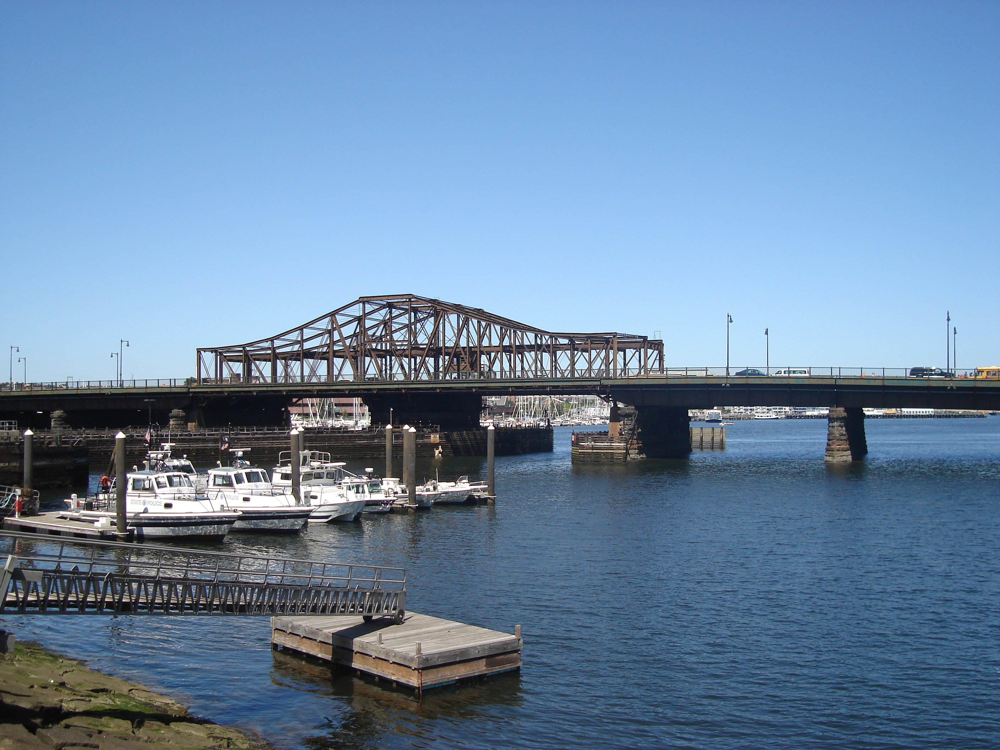
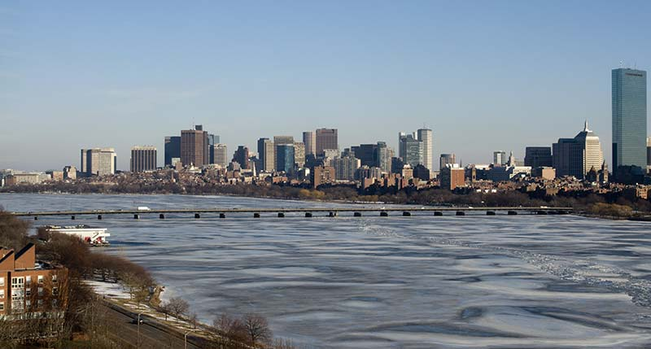
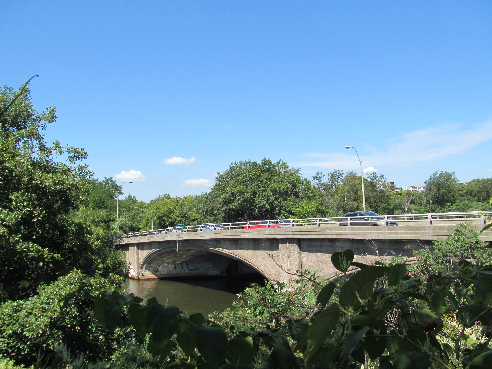
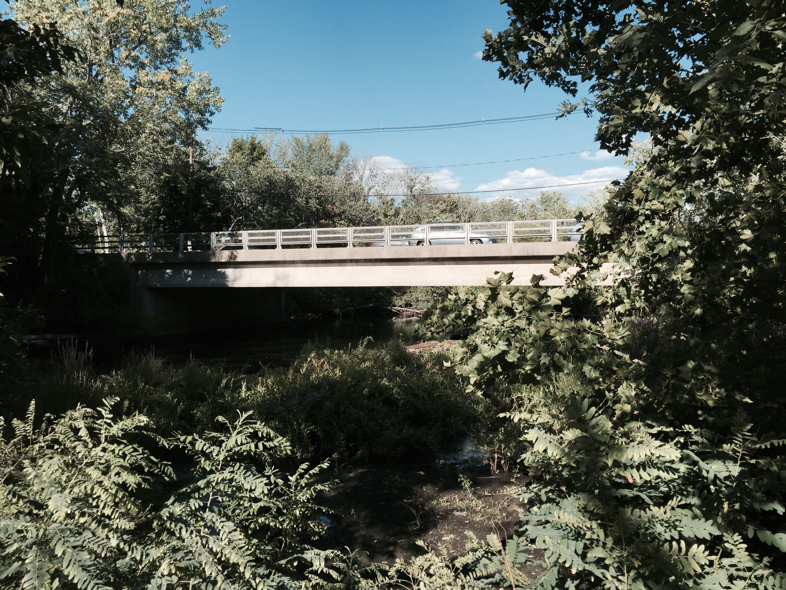
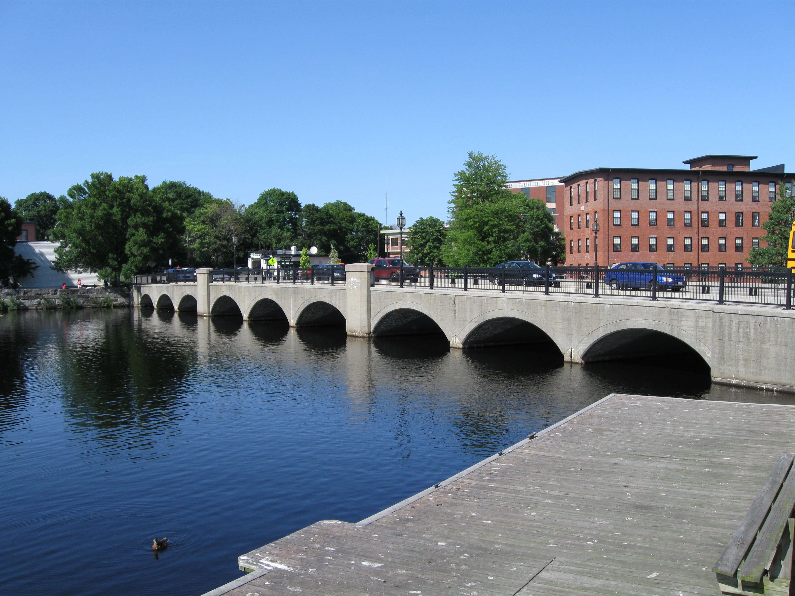
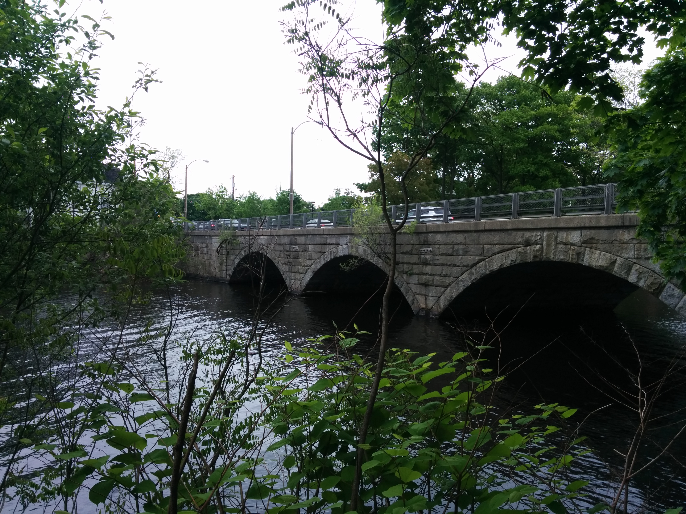
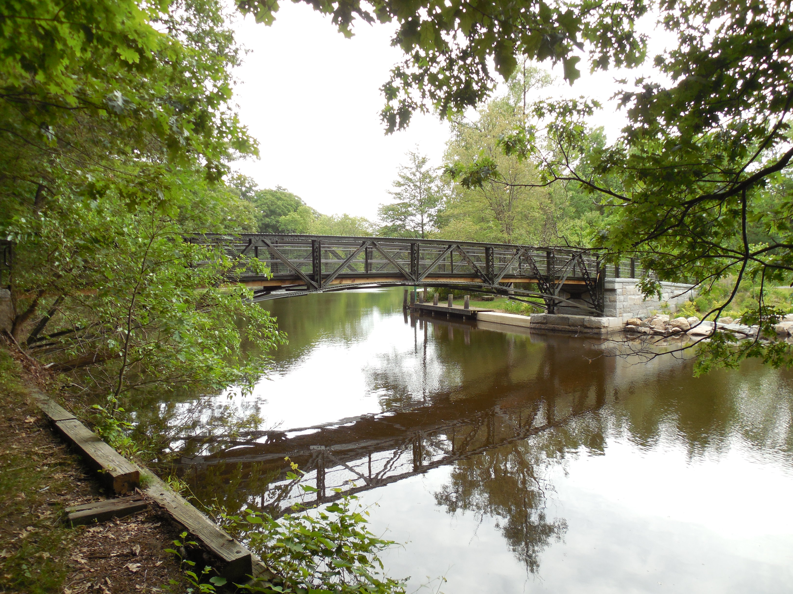

<!DOCTYPE html>
<head>    
    <meta http-equiv="content-type" content="text/html; charset=UTF-8" />
    
        <script>
            L_NO_TOUCH = false;
            L_DISABLE_3D = false;
        </script>
    
    <script src="https://cdn.jsdelivr.net/npm/leaflet@1.6.0/dist/leaflet.js"></script>
    <script src="https://code.jquery.com/jquery-1.12.4.min.js"></script>
    <script src="https://maxcdn.bootstrapcdn.com/bootstrap/3.2.0/js/bootstrap.min.js"></script>
    <script src="https://cdnjs.cloudflare.com/ajax/libs/Leaflet.awesome-markers/2.0.2/leaflet.awesome-markers.js"></script>
    <link rel="stylesheet" href="https://cdn.jsdelivr.net/npm/leaflet@1.6.0/dist/leaflet.css"/>
    <link rel="stylesheet" href="https://maxcdn.bootstrapcdn.com/bootstrap/3.2.0/css/bootstrap.min.css"/>
    <link rel="stylesheet" href="https://maxcdn.bootstrapcdn.com/bootstrap/3.2.0/css/bootstrap-theme.min.css"/>
    <link rel="stylesheet" href="https://maxcdn.bootstrapcdn.com/font-awesome/4.6.3/css/font-awesome.min.css"/>
    <link rel="stylesheet" href="https://cdnjs.cloudflare.com/ajax/libs/Leaflet.awesome-markers/2.0.2/leaflet.awesome-markers.css"/>
    <link rel="stylesheet" href="https://rawcdn.githack.com/python-visualization/folium/master/folium/templates/leaflet.awesome.rotate.css"/>
    <style>html, body {width: 100%;height: 100%;margin: 0;padding: 0;}</style>
    <style>#map {position:absolute;top:0;bottom:0;right:0;left:0;}</style>
    
            <meta name="viewport" content="width=device-width,
                initial-scale=1.0, maximum-scale=1.0, user-scalable=no" />
            <style>
                #map_58155f0b1f224ee6bad9b07094d72ce8 {
                    position: relative;
                    width: 100.0%;
                    height: 100.0%;
                    left: 0.0%;
                    top: 0.0%;
                }
            </style>
        
</head>
<body>    
    
            <div class="folium-map" id="map_58155f0b1f224ee6bad9b07094d72ce8" ></div>
        
</body>
<script>    
    
            var map_58155f0b1f224ee6bad9b07094d72ce8 = L.map(
                "map_58155f0b1f224ee6bad9b07094d72ce8",
                {
                    center: [42.3736, -71.1097],
                    crs: L.CRS.EPSG3857,
                    zoom: 12,
                    zoomControl: true,
                    preferCanvas: false,
                }
            );

            

        
    
            var tile_layer_9295b563840c488682f080b9058f14d1 = L.tileLayer(
                "https://{s}.tile.openstreetmap.org/{z}/{x}/{y}.png",
                {"attribution": "Data by \u0026copy; \u003ca href=\"http://openstreetmap.org\"\u003eOpenStreetMap\u003c/a\u003e, under \u003ca href=\"http://www.openstreetmap.org/copyright\"\u003eODbL\u003c/a\u003e.", "detectRetina": false, "maxNativeZoom": 18, "maxZoom": 18, "minZoom": 0, "noWrap": false, "opacity": 1, "subdomains": "abc", "tms": false}
            ).addTo(map_58155f0b1f224ee6bad9b07094d72ce8);
        
    
            var marker_78e3f82a36c741b0bc3e02b259a7ae59 = L.marker(
                [42.36889, -71.06],
                {}
            ).addTo(map_58155f0b1f224ee6bad9b07094d72ce8);
        
    
            var icon_cafb844f9ed6484baf2aaa3ca2b49ef1 = L.AwesomeMarkers.icon(
                {"extraClasses": "fa-rotate-0", "icon": "info-sign", "iconColor": "white", "markerColor": "green", "prefix": "glyphicon"}
            );
            marker_78e3f82a36c741b0bc3e02b259a7ae59.setIcon(icon_cafb844f9ed6484baf2aaa3ca2b49ef1);
        
    
        var popup_e79bd523224845b98c2c9cdbb107373a = L.popup({"maxHeight": "300", "maxWidth": "300"});

        
            var html_1ebb8586172644bfa06db6011e07868c = $(`<div id="html_1ebb8586172644bfa06db6011e07868c" style="width: 100.0%; height: 100.0%;"><strong style="color:#967bb6;">Charlestown Bridge</strong><br></div>`)[0];
            popup_e79bd523224845b98c2c9cdbb107373a.setContent(html_1ebb8586172644bfa06db6011e07868c);
        

        marker_78e3f82a36c741b0bc3e02b259a7ae59.bindPopup(popup_e79bd523224845b98c2c9cdbb107373a)
        ;

        
    
    
            var marker_8276356550484ae68bf1606d235dbaa3 = L.marker(
                [42.36861, -71.0614167],
                {}
            ).addTo(map_58155f0b1f224ee6bad9b07094d72ce8);
        
    
            var icon_7ae3c3e860e74897bffd277fb306258c = L.AwesomeMarkers.icon(
                {"extraClasses": "fa-rotate-0", "icon": "info-sign", "iconColor": "white", "markerColor": "red", "prefix": "glyphicon"}
            );
            marker_8276356550484ae68bf1606d235dbaa3.setIcon(icon_7ae3c3e860e74897bffd277fb306258c);
        
    
        var popup_43166e410ac0420ab91b83858f7a0515 = L.popup({"maxHeight": "300", "maxWidth": "300"});

        
            var html_7fc10efd281a4a1c8c1f200bb8365555 = $(`<div id="html_7fc10efd281a4a1c8c1f200bb8365555" style="width: 100.0%; height: 100.0%;"><strong style="color:#967bb6;">(New) Charles River Dam</strong><br></div>`)[0];
            popup_43166e410ac0420ab91b83858f7a0515.setContent(html_7fc10efd281a4a1c8c1f200bb8365555);
        

        marker_8276356550484ae68bf1606d235dbaa3.bindPopup(popup_43166e410ac0420ab91b83858f7a0515)
        ;

        
    
    
            var marker_0dd28d86bee14b32a275554271ff6ceb = L.marker(
                [42.36889, -71.06361],
                {}
            ).addTo(map_58155f0b1f224ee6bad9b07094d72ce8);
        
    
            var icon_1668da1a46e04c1f9165fd60aa6c5681 = L.AwesomeMarkers.icon(
                {"extraClasses": "fa-rotate-0", "icon": "info-sign", "iconColor": "white", "markerColor": "red", "prefix": "glyphicon"}
            );
            marker_0dd28d86bee14b32a275554271ff6ceb.setIcon(icon_1668da1a46e04c1f9165fd60aa6c5681);
        
    
        var popup_71382667d92941f48d817d82b606b304 = L.popup({"maxHeight": "300", "maxWidth": "300"});

        
            var html_7505f5095409402fb693474719862272 = $(`<div id="html_7505f5095409402fb693474719862272" style="width: 100.0%; height: 100.0%;"><strong style="color:#967bb6;">Leonard P. Zakim Bunker Hill Bridge</strong><br></div>`)[0];
            popup_71382667d92941f48d817d82b606b304.setContent(html_7505f5095409402fb693474719862272);
        

        marker_0dd28d86bee14b32a275554271ff6ceb.bindPopup(popup_71382667d92941f48d817d82b606b304)
        ;

        
    
    
            var marker_1eaace214c354af091c4ff3ce5d00d2e = L.marker(
                [42.36889, -71.06444],
                {}
            ).addTo(map_58155f0b1f224ee6bad9b07094d72ce8);
        
    
            var icon_57af0ae5f3f4408d9f57833cd8bf4821 = L.AwesomeMarkers.icon(
                {"extraClasses": "fa-rotate-0", "icon": "info-sign", "iconColor": "white", "markerColor": "red", "prefix": "glyphicon"}
            );
            marker_1eaace214c354af091c4ff3ce5d00d2e.setIcon(icon_57af0ae5f3f4408d9f57833cd8bf4821);
        
    
        var popup_a0f63d6b01434f1e932d0cc0c3765218 = L.popup({"maxHeight": "300", "maxWidth": "300"});

        
            var html_9aa67f194ac74a0aaa7e40d6a206d68a = $(`<div id="html_9aa67f194ac74a0aaa7e40d6a206d68a" style="width: 100.0%; height: 100.0%;"><strong style="color:#967bb6;">Leverett Circle Connector Bridge</strong><br></div>`)[0];
            popup_a0f63d6b01434f1e932d0cc0c3765218.setContent(html_9aa67f194ac74a0aaa7e40d6a206d68a);
        

        marker_1eaace214c354af091c4ff3ce5d00d2e.bindPopup(popup_a0f63d6b01434f1e932d0cc0c3765218)
        ;

        
    
    
            var marker_08fde003fdb44577a7ab7e3483aebf55 = L.marker(
                [42.3689694, -71.0652667],
                {}
            ).addTo(map_58155f0b1f224ee6bad9b07094d72ce8);
        
    
            var icon_e78f7467f5dd4e3a83a7c1672f63ef61 = L.AwesomeMarkers.icon(
                {"extraClasses": "fa-rotate-0", "icon": "info-sign", "iconColor": "white", "markerColor": "red", "prefix": "glyphicon"}
            );
            marker_08fde003fdb44577a7ab7e3483aebf55.setIcon(icon_e78f7467f5dd4e3a83a7c1672f63ef61);
        
    
        var popup_4bbb6b32925f48f8a74a8fe8182db6d1 = L.popup({"maxHeight": "300", "maxWidth": "300"});

        
            var html_ec73caafa3f04d0d86461e806b2c66e7 = $(`<div id="html_ec73caafa3f04d0d86461e806b2c66e7" style="width: 100.0%; height: 100.0%;"><strong style="color:#967bb6;">MBTA Commuter Rail Charles River Bridge</strong><br></div>`)[0];
            popup_4bbb6b32925f48f8a74a8fe8182db6d1.setContent(html_ec73caafa3f04d0d86461e806b2c66e7);
        

        marker_08fde003fdb44577a7ab7e3483aebf55.bindPopup(popup_4bbb6b32925f48f8a74a8fe8182db6d1)
        ;

        
    
    
            var marker_f3c538a595464c419a201c64b9c556d7 = L.marker(
                [42.3673111, -71.0689694],
                {}
            ).addTo(map_58155f0b1f224ee6bad9b07094d72ce8);
        
    
            var icon_748d152bbe8a4f10ba330732dc8e6aab = L.AwesomeMarkers.icon(
                {"extraClasses": "fa-rotate-0", "icon": "info-sign", "iconColor": "white", "markerColor": "green", "prefix": "glyphicon"}
            );
            marker_f3c538a595464c419a201c64b9c556d7.setIcon(icon_748d152bbe8a4f10ba330732dc8e6aab);
        
    
        var popup_85daf86b88e84d39a3598d99a3c84589 = L.popup({"maxHeight": "300", "maxWidth": "300"});

        
            var html_fe777a85e98b427481f489213c760470 = $(`<div id="html_fe777a85e98b427481f489213c760470" style="width: 100.0%; height: 100.0%;"><strong style="color:#967bb6;">MBTA Green Line Lechmere Viaduct</strong><br></div>`)[0];
            popup_85daf86b88e84d39a3598d99a3c84589.setContent(html_fe777a85e98b427481f489213c760470);
        

        marker_f3c538a595464c419a201c64b9c556d7.bindPopup(popup_85daf86b88e84d39a3598d99a3c84589)
        ;

        
    
    
            var marker_883885dad5b644878a60c3c4096eaefd = L.marker(
                [42.3671278, -71.0691306],
                {}
            ).addTo(map_58155f0b1f224ee6bad9b07094d72ce8);
        
    
            var icon_639439447ca54e2684035f201565e9a7 = L.AwesomeMarkers.icon(
                {"extraClasses": "fa-rotate-0", "icon": "info-sign", "iconColor": "white", "markerColor": "red", "prefix": "glyphicon"}
            );
            marker_883885dad5b644878a60c3c4096eaefd.setIcon(icon_639439447ca54e2684035f201565e9a7);
        
    
        var popup_a0a32239594a4c2e929eecbc238bf66b = L.popup({"maxHeight": "300", "maxWidth": "300"});

        
            var html_f2fc39af04914215b5ed29bbe33b3997 = $(`<div id="html_f2fc39af04914215b5ed29bbe33b3997" style="width: 100.0%; height: 100.0%;"><strong style="color:#967bb6;">(Old) Charles River Dam Bridge</strong><br></div>`)[0];
            popup_a0a32239594a4c2e929eecbc238bf66b.setContent(html_f2fc39af04914215b5ed29bbe33b3997);
        

        marker_883885dad5b644878a60c3c4096eaefd.bindPopup(popup_a0a32239594a4c2e929eecbc238bf66b)
        ;

        
    
    
            var marker_c46346272d094b3aa6afdbdbe9b20d26 = L.marker(
                [42.36139, -71.07556],
                {}
            ).addTo(map_58155f0b1f224ee6bad9b07094d72ce8);
        
    
            var icon_c2e4bf27fb414ffd9c5d4d9aefcc01cb = L.AwesomeMarkers.icon(
                {"extraClasses": "fa-rotate-0", "icon": "info-sign", "iconColor": "white", "markerColor": "green", "prefix": "glyphicon"}
            );
            marker_c46346272d094b3aa6afdbdbe9b20d26.setIcon(icon_c2e4bf27fb414ffd9c5d4d9aefcc01cb);
        
    
        var popup_52405bd3bb1c407299e7c2002094a1d4 = L.popup({"maxHeight": "300", "maxWidth": "300"});

        
            var html_fc39f56c2e884eeab4fc435b6d36efc8 = $(`<div id="html_fc39f56c2e884eeab4fc435b6d36efc8" style="width: 100.0%; height: 100.0%;"><strong style="color:#967bb6;">Longfellow Bridge</strong><br></div>`)[0];
            popup_52405bd3bb1c407299e7c2002094a1d4.setContent(html_fc39f56c2e884eeab4fc435b6d36efc8);
        

        marker_c46346272d094b3aa6afdbdbe9b20d26.bindPopup(popup_52405bd3bb1c407299e7c2002094a1d4)
        ;

        
    
    
            var marker_cb6dea6a20564dcb8e794fb30acc6986 = L.marker(
                [42.35417, -71.09111],
                {}
            ).addTo(map_58155f0b1f224ee6bad9b07094d72ce8);
        
    
            var icon_73938bafaedb48128ed184c44f92495c = L.AwesomeMarkers.icon(
                {"extraClasses": "fa-rotate-0", "icon": "info-sign", "iconColor": "white", "markerColor": "green", "prefix": "glyphicon"}
            );
            marker_cb6dea6a20564dcb8e794fb30acc6986.setIcon(icon_73938bafaedb48128ed184c44f92495c);
        
    
        var popup_021361e344d84c37805f3ca4ba314267 = L.popup({"maxHeight": "300", "maxWidth": "300"});

        
            var html_77ae040d1b534dea8c5ef5d85a6a6e83 = $(`<div id="html_77ae040d1b534dea8c5ef5d85a6a6e83" style="width: 100.0%; height: 100.0%;"><strong style="color:#967bb6;">Harvard Bridge</strong><br></div>`)[0];
            popup_021361e344d84c37805f3ca4ba314267.setContent(html_77ae040d1b534dea8c5ef5d85a6a6e83);
        

        marker_cb6dea6a20564dcb8e794fb30acc6986.bindPopup(popup_021361e344d84c37805f3ca4ba314267)
        ;

        
    
    
            var marker_9210e866ac554bc09c9c5b05b55e7747 = L.marker(
                [42.3525333, -71.1106278],
                {}
            ).addTo(map_58155f0b1f224ee6bad9b07094d72ce8);
        
    
            var icon_e25ec8392e1942acbf02574d6248b580 = L.AwesomeMarkers.icon(
                {"extraClasses": "fa-rotate-0", "icon": "info-sign", "iconColor": "white", "markerColor": "green", "prefix": "glyphicon"}
            );
            marker_9210e866ac554bc09c9c5b05b55e7747.setIcon(icon_e25ec8392e1942acbf02574d6248b580);
        
    
        var popup_ae60f38c6ee045819cebcc474bdda628 = L.popup({"maxHeight": "300", "maxWidth": "300"});

        
            var html_edd396a9a385450c892684f03fb8c748 = $(`<div id="html_edd396a9a385450c892684f03fb8c748" style="width: 100.0%; height: 100.0%;"><strong style="color:#967bb6;">Boston University Bridge</strong><br></div>`)[0];
            popup_ae60f38c6ee045819cebcc474bdda628.setContent(html_edd396a9a385450c892684f03fb8c748);
        

        marker_9210e866ac554bc09c9c5b05b55e7747.bindPopup(popup_ae60f38c6ee045819cebcc474bdda628)
        ;

        
    
    
            var marker_94ec664a55704f04988346d617524c83 = L.marker(
                [42.3526917, -71.1102],
                {}
            ).addTo(map_58155f0b1f224ee6bad9b07094d72ce8);
        
    
            var icon_497b2979f5874e909ab482b093b8493f = L.AwesomeMarkers.icon(
                {"extraClasses": "fa-rotate-0", "icon": "info-sign", "iconColor": "white", "markerColor": "red", "prefix": "glyphicon"}
            );
            marker_94ec664a55704f04988346d617524c83.setIcon(icon_497b2979f5874e909ab482b093b8493f);
        
    
        var popup_d16625d435d14063a9e4484554e8bed4 = L.popup({"maxHeight": "300", "maxWidth": "300"});

        
            var html_32f315db3790470f8e273afae7ea5037 = $(`<div id="html_32f315db3790470f8e273afae7ea5037" style="width: 100.0%; height: 100.0%;"><strong style="color:#967bb6;">Grand Junction Railroad Bridge</strong><br></div>`)[0];
            popup_d16625d435d14063a9e4484554e8bed4.setContent(html_32f315db3790470f8e273afae7ea5037);
        

        marker_94ec664a55704f04988346d617524c83.bindPopup(popup_d16625d435d14063a9e4484554e8bed4)
        ;

        
    
    
            var marker_8942adc0556c484ea4f2b2fe97c9b5a7 = L.marker(
                [42.36139, -71.11667],
                {}
            ).addTo(map_58155f0b1f224ee6bad9b07094d72ce8);
        
    
            var icon_d716cf6e7ee14078baa564d70e95afc3 = L.AwesomeMarkers.icon(
                {"extraClasses": "fa-rotate-0", "icon": "info-sign", "iconColor": "white", "markerColor": "green", "prefix": "glyphicon"}
            );
            marker_8942adc0556c484ea4f2b2fe97c9b5a7.setIcon(icon_d716cf6e7ee14078baa564d70e95afc3);
        
    
        var popup_7efd2372f6604bcda0b354eff8a79d81 = L.popup({"maxHeight": "300", "maxWidth": "300"});

        
            var html_3ce6942b202d4368abb3f1a9d1af0cd0 = $(`<div id="html_3ce6942b202d4368abb3f1a9d1af0cd0" style="width: 100.0%; height: 100.0%;"><strong style="color:#967bb6;">River Street Bridge</strong><br></div>`)[0];
            popup_7efd2372f6604bcda0b354eff8a79d81.setContent(html_3ce6942b202d4368abb3f1a9d1af0cd0);
        

        marker_8942adc0556c484ea4f2b2fe97c9b5a7.bindPopup(popup_7efd2372f6604bcda0b354eff8a79d81)
        ;

        
    
    
            var marker_c2a6349e323545bd8f74e0fc8a700ba7 = L.marker(
                [42.3642361, -71.1169806],
                {}
            ).addTo(map_58155f0b1f224ee6bad9b07094d72ce8);
        
    
            var icon_043e185369854008b31581b1c8040385 = L.AwesomeMarkers.icon(
                {"extraClasses": "fa-rotate-0", "icon": "info-sign", "iconColor": "white", "markerColor": "green", "prefix": "glyphicon"}
            );
            marker_c2a6349e323545bd8f74e0fc8a700ba7.setIcon(icon_043e185369854008b31581b1c8040385);
        
    
        var popup_076c58bc24684dfcb09252ecfc586359 = L.popup({"maxHeight": "300", "maxWidth": "300"});

        
            var html_dc01fb1d6aea4b4690d9c2f74f31fe5d = $(`<div id="html_dc01fb1d6aea4b4690d9c2f74f31fe5d" style="width: 100.0%; height: 100.0%;"><strong style="color:#967bb6;">Western Avenue Bridge</strong><br></div>`)[0];
            popup_076c58bc24684dfcb09252ecfc586359.setContent(html_dc01fb1d6aea4b4690d9c2f74f31fe5d);
        

        marker_c2a6349e323545bd8f74e0fc8a700ba7.bindPopup(popup_076c58bc24684dfcb09252ecfc586359)
        ;

        
    
    
            var marker_9a61576aea8742609616b149a84209d3 = L.marker(
                [42.3685083, -71.1181278],
                {}
            ).addTo(map_58155f0b1f224ee6bad9b07094d72ce8);
        
    
            var icon_9f15a9f5e2ea4034bf35b49686d1b3d5 = L.AwesomeMarkers.icon(
                {"extraClasses": "fa-rotate-0", "icon": "info-sign", "iconColor": "white", "markerColor": "green", "prefix": "glyphicon"}
            );
            marker_9a61576aea8742609616b149a84209d3.setIcon(icon_9f15a9f5e2ea4034bf35b49686d1b3d5);
        
    
        var popup_746568eb9b0c44c5bf35945e1b5d0d2f = L.popup({"maxHeight": "300", "maxWidth": "300"});

        
            var html_1b06c8c931824a5b94576b2842369a7c = $(`<div id="html_1b06c8c931824a5b94576b2842369a7c" style="width: 100.0%; height: 100.0%;"><strong style="color:#967bb6;">John W. Weeks Bridge</strong><br></div>`)[0];
            popup_746568eb9b0c44c5bf35945e1b5d0d2f.setContent(html_1b06c8c931824a5b94576b2842369a7c);
        

        marker_9a61576aea8742609616b149a84209d3.bindPopup(popup_746568eb9b0c44c5bf35945e1b5d0d2f)
        ;

        
    
    
            var marker_281ebc63e66d4502b00f48d050046e6d = L.marker(
                [42.36889, -71.12306],
                {}
            ).addTo(map_58155f0b1f224ee6bad9b07094d72ce8);
        
    
            var icon_ecf86da879df49ff834a6eeea68a8d05 = L.AwesomeMarkers.icon(
                {"extraClasses": "fa-rotate-0", "icon": "info-sign", "iconColor": "white", "markerColor": "green", "prefix": "glyphicon"}
            );
            marker_281ebc63e66d4502b00f48d050046e6d.setIcon(icon_ecf86da879df49ff834a6eeea68a8d05);
        
    
        var popup_a75f0fa6324843e49f9c523b83a0b68c = L.popup({"maxHeight": "300", "maxWidth": "300"});

        
            var html_fcd18eaf7f69436fbdad1f33c704d126 = $(`<div id="html_fcd18eaf7f69436fbdad1f33c704d126" style="width: 100.0%; height: 100.0%;"><strong style="color:#967bb6;">Anderson Memorial Bridge</strong><br></div>`)[0];
            popup_a75f0fa6324843e49f9c523b83a0b68c.setContent(html_fcd18eaf7f69436fbdad1f33c704d126);
        

        marker_281ebc63e66d4502b00f48d050046e6d.bindPopup(popup_a75f0fa6324843e49f9c523b83a0b68c)
        ;

        
    
    
            var marker_a1bdddffdf8a4a069312eb9de69366a6 = L.marker(
                [42.37167, -71.13306],
                {}
            ).addTo(map_58155f0b1f224ee6bad9b07094d72ce8);
        
    
            var icon_6d969f70c163491996bae7b89b481d11 = L.AwesomeMarkers.icon(
                {"extraClasses": "fa-rotate-0", "icon": "info-sign", "iconColor": "white", "markerColor": "green", "prefix": "glyphicon"}
            );
            marker_a1bdddffdf8a4a069312eb9de69366a6.setIcon(icon_6d969f70c163491996bae7b89b481d11);
        
    
        var popup_72472001cb8c44348b943080c073e30a = L.popup({"maxHeight": "300", "maxWidth": "300"});

        
            var html_5a7841d93eb14bf88465ae4eb410922e = $(`<div id="html_5a7841d93eb14bf88465ae4eb410922e" style="width: 100.0%; height: 100.0%;"><strong style="color:#967bb6;">Eliot Bridge</strong><br></div>`)[0];
            popup_72472001cb8c44348b943080c073e30a.setContent(html_5a7841d93eb14bf88465ae4eb410922e);
        

        marker_a1bdddffdf8a4a069312eb9de69366a6.bindPopup(popup_72472001cb8c44348b943080c073e30a)
        ;

        
    
    
            var marker_2b47d7b3b1b84cdbafc7d9238e79fd65 = L.marker(
                [42.36167, -71.14722],
                {}
            ).addTo(map_58155f0b1f224ee6bad9b07094d72ce8);
        
    
            var icon_99ba947c281544369d909483d1d140c9 = L.AwesomeMarkers.icon(
                {"extraClasses": "fa-rotate-0", "icon": "info-sign", "iconColor": "white", "markerColor": "green", "prefix": "glyphicon"}
            );
            marker_2b47d7b3b1b84cdbafc7d9238e79fd65.setIcon(icon_99ba947c281544369d909483d1d140c9);
        
    
        var popup_a85eac7f98c54290adf3ddb5112f97ea = L.popup({"maxHeight": "300", "maxWidth": "300"});

        
            var html_f0df0a4feeaf4921b2bba54347f407a4 = $(`<div id="html_f0df0a4feeaf4921b2bba54347f407a4" style="width: 100.0%; height: 100.0%;"><strong style="color:#967bb6;">Arsenal Street Bridge</strong><br></div>`)[0];
            popup_a85eac7f98c54290adf3ddb5112f97ea.setContent(html_f0df0a4feeaf4921b2bba54347f407a4);
        

        marker_2b47d7b3b1b84cdbafc7d9238e79fd65.bindPopup(popup_a85eac7f98c54290adf3ddb5112f97ea)
        ;

        
    
    
            var marker_19381d71f5ce4e1e8de74fd56eed05e1 = L.marker(
                [42.35889, -71.16167],
                {}
            ).addTo(map_58155f0b1f224ee6bad9b07094d72ce8);
        
    
            var icon_1e2fd26123cc40d0a8c40bac80887bb7 = L.AwesomeMarkers.icon(
                {"extraClasses": "fa-rotate-0", "icon": "info-sign", "iconColor": "white", "markerColor": "green", "prefix": "glyphicon"}
            );
            marker_19381d71f5ce4e1e8de74fd56eed05e1.setIcon(icon_1e2fd26123cc40d0a8c40bac80887bb7);
        
    
        var popup_9699a19934344c70a9bcdf7366b38c51 = L.popup({"maxHeight": "300", "maxWidth": "300"});

        
            var html_dfefa314c803429c921cb378b6bc0b1e = $(`<div id="html_dfefa314c803429c921cb378b6bc0b1e" style="width: 100.0%; height: 100.0%;"><strong style="color:#967bb6;">North Beacon Street Bridge</strong><br></div>`)[0];
            popup_9699a19934344c70a9bcdf7366b38c51.setContent(html_dfefa314c803429c921cb378b6bc0b1e);
        

        marker_19381d71f5ce4e1e8de74fd56eed05e1.bindPopup(popup_9699a19934344c70a9bcdf7366b38c51)
        ;

        
    
    
            var marker_be838a6b050b4b2d82f7c07f62dc932c = L.marker(
                [42.36472, -71.18556],
                {}
            ).addTo(map_58155f0b1f224ee6bad9b07094d72ce8);
        
    
            var icon_04ec338c1b7f45ffaa8838c3a3f2702f = L.AwesomeMarkers.icon(
                {"extraClasses": "fa-rotate-0", "icon": "info-sign", "iconColor": "white", "markerColor": "green", "prefix": "glyphicon"}
            );
            marker_be838a6b050b4b2d82f7c07f62dc932c.setIcon(icon_04ec338c1b7f45ffaa8838c3a3f2702f);
        
    
        var popup_12ca0b226b014028b38bd60c405751fc = L.popup({"maxHeight": "300", "maxWidth": "300"});

        
            var html_a6b3e2f06c944f0fa9a9672d3655a9e2 = $(`<div id="html_a6b3e2f06c944f0fa9a9672d3655a9e2" style="width: 100.0%; height: 100.0%;"><strong style="color:#967bb6;">Watertown Bridge</strong><br></div>`)[0];
            popup_12ca0b226b014028b38bd60c405751fc.setContent(html_a6b3e2f06c944f0fa9a9672d3655a9e2);
        

        marker_be838a6b050b4b2d82f7c07f62dc932c.bindPopup(popup_12ca0b226b014028b38bd60c405751fc)
        ;

        
    
    
            var marker_fd18d76e8b6d48dc9f9ed0022bfd0748 = L.marker(
                [42.3653528, -71.1892611],
                {}
            ).addTo(map_58155f0b1f224ee6bad9b07094d72ce8);
        
    
            var icon_4228f4c1885743e391c4046026fc93cb = L.AwesomeMarkers.icon(
                {"extraClasses": "fa-rotate-0", "icon": "info-sign", "iconColor": "white", "markerColor": "red", "prefix": "glyphicon"}
            );
            marker_fd18d76e8b6d48dc9f9ed0022bfd0748.setIcon(icon_4228f4c1885743e391c4046026fc93cb);
        
    
        var popup_c8c164f9fdf14bc68188ed0af29451a9 = L.popup({"maxHeight": "300", "maxWidth": "300"});

        
            var html_625f8d91db9a4b15a0a10469856134f7 = $(`<div id="html_625f8d91db9a4b15a0a10469856134f7" style="width: 100.0%; height: 100.0%;"><strong style="color:#967bb6;">Watertown Dam</strong><br></div>`)[0];
            popup_c8c164f9fdf14bc68188ed0af29451a9.setContent(html_625f8d91db9a4b15a0a10469856134f7);
        

        marker_fd18d76e8b6d48dc9f9ed0022bfd0748.bindPopup(popup_c8c164f9fdf14bc68188ed0af29451a9)
        ;

        
    
    
            var marker_293f28e35aa8497593dd8a8e91cbf957 = L.marker(
                [42.3651083, -71.1902694],
                {}
            ).addTo(map_58155f0b1f224ee6bad9b07094d72ce8);
        
    
            var icon_e5cbe093034e4cb999bd2ce93f0168fd = L.AwesomeMarkers.icon(
                {"extraClasses": "fa-rotate-0", "icon": "info-sign", "iconColor": "white", "markerColor": "red", "prefix": "glyphicon"}
            );
            marker_293f28e35aa8497593dd8a8e91cbf957.setIcon(icon_e5cbe093034e4cb999bd2ce93f0168fd);
        
    
        var popup_d7262d3d48174d6aa730436351906b9b = L.popup({"maxHeight": "300", "maxWidth": "300"});

        
            var html_c8ca7988061a45df97d6a9269613ee44 = $(`<div id="html_c8ca7988061a45df97d6a9269613ee44" style="width: 100.0%; height: 100.0%;"><strong style="color:#967bb6;">Cpl. Joseph U. Thompson Footbridge</strong><br></div>`)[0];
            popup_d7262d3d48174d6aa730436351906b9b.setContent(html_c8ca7988061a45df97d6a9269613ee44);
        

        marker_293f28e35aa8497593dd8a8e91cbf957.bindPopup(popup_d7262d3d48174d6aa730436351906b9b)
        ;

        
    
    
            var marker_5491c6d0bbc74bd6b810ee83d71dc4c4 = L.marker(
                [42.3651083, -71.1902694],
                {}
            ).addTo(map_58155f0b1f224ee6bad9b07094d72ce8);
        
    
            var icon_f7cf2b528dea49f4b5bb8a5fd44257f3 = L.AwesomeMarkers.icon(
                {"extraClasses": "fa-rotate-0", "icon": "info-sign", "iconColor": "white", "markerColor": "green", "prefix": "glyphicon"}
            );
            marker_5491c6d0bbc74bd6b810ee83d71dc4c4.setIcon(icon_f7cf2b528dea49f4b5bb8a5fd44257f3);
        
    
        var popup_476dd4b5beb946a8b34872f70e9920f4 = L.popup({"maxHeight": "300", "maxWidth": "300"});

        
            var html_7d691f026ad24fd683689c1944601c92 = $(`<div id="html_7d691f026ad24fd683689c1944601c92" style="width: 100.0%; height: 100.0%;"><strong style="color:#967bb6;">Cpl. Joseph U. Thompson Footbridge (new)</strong><br></div>`)[0];
            popup_476dd4b5beb946a8b34872f70e9920f4.setContent(html_7d691f026ad24fd683689c1944601c92);
        

        marker_5491c6d0bbc74bd6b810ee83d71dc4c4.bindPopup(popup_476dd4b5beb946a8b34872f70e9920f4)
        ;

        
    
    
            var marker_83db990322fb42378e3c045b1109fc6e = L.marker(
                [42.3657972, -71.2044333],
                {}
            ).addTo(map_58155f0b1f224ee6bad9b07094d72ce8);
        
    
            var icon_1b3f28dab3064d048114b301be54dadc = L.AwesomeMarkers.icon(
                {"extraClasses": "fa-rotate-0", "icon": "info-sign", "iconColor": "white", "markerColor": "green", "prefix": "glyphicon"}
            );
            marker_83db990322fb42378e3c045b1109fc6e.setIcon(icon_1b3f28dab3064d048114b301be54dadc);
        
    
        var popup_03414510127d4f4abe0dbfeafbe0f9a0 = L.popup({"maxHeight": "300", "maxWidth": "300"});

        
            var html_6d6f645b28c24134808cc7e2a3a8f531 = $(`<div id="html_6d6f645b28c24134808cc7e2a3a8f531" style="width: 100.0%; height: 100.0%;"><strong style="color:#967bb6;">Bridge Street Bridge1</strong><br></div>`)[0];
            popup_03414510127d4f4abe0dbfeafbe0f9a0.setContent(html_6d6f645b28c24134808cc7e2a3a8f531);
        

        marker_83db990322fb42378e3c045b1109fc6e.bindPopup(popup_03414510127d4f4abe0dbfeafbe0f9a0)
        ;

        
    
    
            var marker_520a1f622a3e4f0b9dea4729021c7af3 = L.marker(
                [42.3657167, -71.2049778],
                {}
            ).addTo(map_58155f0b1f224ee6bad9b07094d72ce8);
        
    
            var icon_91a7e614ed6543c1b0a35a8f608efc2d = L.AwesomeMarkers.icon(
                {"extraClasses": "fa-rotate-0", "icon": "info-sign", "iconColor": "white", "markerColor": "red", "prefix": "glyphicon"}
            );
            marker_520a1f622a3e4f0b9dea4729021c7af3.setIcon(icon_91a7e614ed6543c1b0a35a8f608efc2d);
        
    
        var popup_562bbf3a568246579705a1d6c80680c3 = L.popup({"maxHeight": "300", "maxWidth": "300"});

        
            var html_41154f9e72eb48839653775e8f46e844 = $(`<div id="html_41154f9e72eb48839653775e8f46e844" style="width: 100.0%; height: 100.0%;"><strong style="color:#967bb6;">Bemis Dam (breached)</strong><br></div>`)[0];
            popup_562bbf3a568246579705a1d6c80680c3.setContent(html_41154f9e72eb48839653775e8f46e844);
        

        marker_520a1f622a3e4f0b9dea4729021c7af3.bindPopup(popup_562bbf3a568246579705a1d6c80680c3)
        ;

        
    
    
            var marker_9b38f2371f434071844109d41045635c = L.marker(
                [42.3648139, -71.2127361],
                {}
            ).addTo(map_58155f0b1f224ee6bad9b07094d72ce8);
        
    
            var icon_5ba3b5c8676740749426f9a7637d5103 = L.AwesomeMarkers.icon(
                {"extraClasses": "fa-rotate-0", "icon": "info-sign", "iconColor": "white", "markerColor": "green", "prefix": "glyphicon"}
            );
            marker_9b38f2371f434071844109d41045635c.setIcon(icon_5ba3b5c8676740749426f9a7637d5103);
        
    
        var popup_0a7778ed70bb48f39120037597b5cb61 = L.popup({"maxHeight": "300", "maxWidth": "300"});

        
            var html_3e75111592614397a9fd1fed819626ef = $(`<div id="html_3e75111592614397a9fd1fed819626ef" style="width: 100.0%; height: 100.0%;"><strong style="color:#967bb6;">Blue Heron Footbridge</strong><br></div>`)[0];
            popup_0a7778ed70bb48f39120037597b5cb61.setContent(html_3e75111592614397a9fd1fed819626ef);
        

        marker_9b38f2371f434071844109d41045635c.bindPopup(popup_0a7778ed70bb48f39120037597b5cb61)
        ;

        
    
    
            var marker_4e975bdb2c80493983edfe19364c667f = L.marker(
                [42.367028, -71.218083],
                {}
            ).addTo(map_58155f0b1f224ee6bad9b07094d72ce8);
        
    
            var icon_56eec922dcbe45ac8100f6b19509e757 = L.AwesomeMarkers.icon(
                {"extraClasses": "fa-rotate-0", "icon": "info-sign", "iconColor": "white", "markerColor": "green", "prefix": "glyphicon"}
            );
            marker_4e975bdb2c80493983edfe19364c667f.setIcon(icon_56eec922dcbe45ac8100f6b19509e757);
        
    
        var popup_91889d1c7b694589985feeccbfa74c2c = L.popup({"maxHeight": "300", "maxWidth": "300"});

        
            var html_6c48f28d9f0248f6a1d43bd35b15476a = $(`<div id="html_6c48f28d9f0248f6a1d43bd35b15476a" style="width: 100.0%; height: 100.0%;"><strong style="color:#967bb6;">Farwell Street Bridge</strong><br></div>`)[0];
            popup_91889d1c7b694589985feeccbfa74c2c.setContent(html_6c48f28d9f0248f6a1d43bd35b15476a);
        

        marker_4e975bdb2c80493983edfe19364c667f.bindPopup(popup_91889d1c7b694589985feeccbfa74c2c)
        ;

        
    
    
            var marker_8846c1034dcb431f9d617792000e8004 = L.marker(
                [42.368944, -71.222333],
                {}
            ).addTo(map_58155f0b1f224ee6bad9b07094d72ce8);
        
    
            var icon_94719b8bcbe744608a987cfd153c65ba = L.AwesomeMarkers.icon(
                {"extraClasses": "fa-rotate-0", "icon": "info-sign", "iconColor": "white", "markerColor": "red", "prefix": "glyphicon"}
            );
            marker_8846c1034dcb431f9d617792000e8004.setIcon(icon_94719b8bcbe744608a987cfd153c65ba);
        
    
        var popup_ba2338cf25db42d89f7583286a6aa7d0 = L.popup({"maxHeight": "300", "maxWidth": "300"});

        
            var html_930e2c7c73594e0c9184a65292f353c8 = $(`<div id="html_930e2c7c73594e0c9184a65292f353c8" style="width: 100.0%; height: 100.0%;"><strong style="color:#967bb6;">Bleachery Footbridge</strong><br></div>`)[0];
            popup_ba2338cf25db42d89f7583286a6aa7d0.setContent(html_930e2c7c73594e0c9184a65292f353c8);
        

        marker_8846c1034dcb431f9d617792000e8004.bindPopup(popup_ba2338cf25db42d89f7583286a6aa7d0)
        ;

        
    
    
            var marker_22ad9c5e2a9244fe90b836e5c580b997 = L.marker(
                [42.3691194, -71.2229833],
                {}
            ).addTo(map_58155f0b1f224ee6bad9b07094d72ce8);
        
    
            var icon_82c359a092e84b58bb3a4193c0d08c0d = L.AwesomeMarkers.icon(
                {"extraClasses": "fa-rotate-0", "icon": "info-sign", "iconColor": "white", "markerColor": "red", "prefix": "glyphicon"}
            );
            marker_22ad9c5e2a9244fe90b836e5c580b997.setIcon(icon_82c359a092e84b58bb3a4193c0d08c0d);
        
    
        var popup_7b543d43383944cbae6c75deec74633b = L.popup({"maxHeight": "300", "maxWidth": "300"});

        
            var html_dbe13ba960bc4be2a7e8df0d31a39bd1 = $(`<div id="html_dbe13ba960bc4be2a7e8df0d31a39bd1" style="width: 100.0%; height: 100.0%;"><strong style="color:#967bb6;">Bleachery Dam</strong><br></div>`)[0];
            popup_7b543d43383944cbae6c75deec74633b.setContent(html_dbe13ba960bc4be2a7e8df0d31a39bd1);
        

        marker_22ad9c5e2a9244fe90b836e5c580b997.bindPopup(popup_7b543d43383944cbae6c75deec74633b)
        ;

        
    
    
            var marker_ac307c9d097f40debf14b6a9ae979168 = L.marker(
                [42.36965, -71.2238722],
                {}
            ).addTo(map_58155f0b1f224ee6bad9b07094d72ce8);
        
    
            var icon_3c1399d0e65644b8848b7eaefe4d3d9c = L.AwesomeMarkers.icon(
                {"extraClasses": "fa-rotate-0", "icon": "info-sign", "iconColor": "white", "markerColor": "green", "prefix": "glyphicon"}
            );
            marker_ac307c9d097f40debf14b6a9ae979168.setIcon(icon_3c1399d0e65644b8848b7eaefe4d3d9c);
        
    
        var popup_03b40ed83ba64333a7cda580d84feb69 = L.popup({"maxHeight": "300", "maxWidth": "300"});

        
            var html_7901d7fcbd514476a73b95ca844a8a4d = $(`<div id="html_7901d7fcbd514476a73b95ca844a8a4d" style="width: 100.0%; height: 100.0%;"><strong style="color:#967bb6;">Mary T. Early Footbridge</strong><br></div>`)[0];
            popup_03b40ed83ba64333a7cda580d84feb69.setContent(html_7901d7fcbd514476a73b95ca844a8a4d);
        

        marker_ac307c9d097f40debf14b6a9ae979168.bindPopup(popup_03b40ed83ba64333a7cda580d84feb69)
        ;

        
    
    
            var marker_8af8704582bb4c798a2a0241ecb18c05 = L.marker(
                [42.3697528, -71.2239694],
                {}
            ).addTo(map_58155f0b1f224ee6bad9b07094d72ce8);
        
    
            var icon_54490a6b704e42beabacccc7d1809a68 = L.AwesomeMarkers.icon(
                {"extraClasses": "fa-rotate-0", "icon": "info-sign", "iconColor": "white", "markerColor": "red", "prefix": "glyphicon"}
            );
            marker_8af8704582bb4c798a2a0241ecb18c05.setIcon(icon_54490a6b704e42beabacccc7d1809a68);
        
    
        var popup_eb8a5b55b9fc42a48498014b3f538f32 = L.popup({"maxHeight": "300", "maxWidth": "300"});

        
            var html_09eed1c0aee14d98890d883fdfdd9d11 = $(`<div id="html_09eed1c0aee14d98890d883fdfdd9d11" style="width: 100.0%; height: 100.0%;"><strong style="color:#967bb6;">Boston & Maine Railroad trestle (abandoned)</strong><br></div>`)[0];
            popup_eb8a5b55b9fc42a48498014b3f538f32.setContent(html_09eed1c0aee14d98890d883fdfdd9d11);
        

        marker_8af8704582bb4c798a2a0241ecb18c05.bindPopup(popup_eb8a5b55b9fc42a48498014b3f538f32)
        ;

        
    
    
            var marker_ba6b125cbf424f0f97c8c974fe8d30af = L.marker(
                [42.3725278, -71.2287528],
                {}
            ).addTo(map_58155f0b1f224ee6bad9b07094d72ce8);
        
    
            var icon_b97efab0dbe0409a918a12f20718537c = L.AwesomeMarkers.icon(
                {"extraClasses": "fa-rotate-0", "icon": "info-sign", "iconColor": "white", "markerColor": "green", "prefix": "glyphicon"}
            );
            marker_ba6b125cbf424f0f97c8c974fe8d30af.setIcon(icon_b97efab0dbe0409a918a12f20718537c);
        
    
        var popup_2be413b46bec486fb261669667a0c014 = L.popup({"maxHeight": "300", "maxWidth": "300"});

        
            var html_9534d91708bb4ccb961531bc7deddb28 = $(`<div id="html_9534d91708bb4ccb961531bc7deddb28" style="width: 100.0%; height: 100.0%;"><strong style="color:#967bb6;">Charles F. Graceffa Bridge</strong><br></div>`)[0];
            popup_2be413b46bec486fb261669667a0c014.setContent(html_9534d91708bb4ccb961531bc7deddb28);
        

        marker_ba6b125cbf424f0f97c8c974fe8d30af.bindPopup(popup_2be413b46bec486fb261669667a0c014)
        ;

        
    
    
            var marker_025c6d95fe104d80857402c2f751cde4 = L.marker(
                [42.3730194, -71.2325528],
                {}
            ).addTo(map_58155f0b1f224ee6bad9b07094d72ce8);
        
    
            var icon_586d23c689394a16864724a9643ca37d = L.AwesomeMarkers.icon(
                {"extraClasses": "fa-rotate-0", "icon": "info-sign", "iconColor": "white", "markerColor": "green", "prefix": "glyphicon"}
            );
            marker_025c6d95fe104d80857402c2f751cde4.setIcon(icon_586d23c689394a16864724a9643ca37d);
        
    
        var popup_6f725de4f56a4cdea2570d42beba1201 = L.popup({"maxHeight": "300", "maxWidth": "300"});

        
            var html_36224cd4382f41a6a2d28fabcde33bf7 = $(`<div id="html_36224cd4382f41a6a2d28fabcde33bf7" style="width: 100.0%; height: 100.0%;"><strong style="color:#967bb6;">Elm Street Bridge</strong><br></div>`)[0];
            popup_6f725de4f56a4cdea2570d42beba1201.setContent(html_36224cd4382f41a6a2d28fabcde33bf7);
        

        marker_025c6d95fe104d80857402c2f751cde4.bindPopup(popup_6f725de4f56a4cdea2570d42beba1201)
        ;

        
    
    
            var marker_4967026dceeb41d195050aff42b60763 = L.marker(
                [42.3728361, -71.2330889],
                {}
            ).addTo(map_58155f0b1f224ee6bad9b07094d72ce8);
        
    
            var icon_af0f56c4422142aaaa28fa09f3885e36 = L.AwesomeMarkers.icon(
                {"extraClasses": "fa-rotate-0", "icon": "info-sign", "iconColor": "white", "markerColor": "red", "prefix": "glyphicon"}
            );
            marker_4967026dceeb41d195050aff42b60763.setIcon(icon_af0f56c4422142aaaa28fa09f3885e36);
        
    
        var popup_c3ab04e26e274df19c6822c322585005 = L.popup({"maxHeight": "300", "maxWidth": "300"});

        
            var html_31b5c14b7311488b9fb8c07325322b32 = $(`<div id="html_31b5c14b7311488b9fb8c07325322b32" style="width: 100.0%; height: 100.0%;"><strong style="color:#967bb6;">Boston & Maine Railroad trestle (abandoned)</strong><br></div>`)[0];
            popup_c3ab04e26e274df19c6822c322585005.setContent(html_31b5c14b7311488b9fb8c07325322b32);
        

        marker_4967026dceeb41d195050aff42b60763.bindPopup(popup_c3ab04e26e274df19c6822c322585005)
        ;

        
    
    
            var marker_e0558da748124d50a5a1356a5cd84e1a = L.marker(
                [42.3723861, -71.2349861],
                {}
            ).addTo(map_58155f0b1f224ee6bad9b07094d72ce8);
        
    
            var icon_c5304196884a46e192e473272edbb9dd = L.AwesomeMarkers.icon(
                {"extraClasses": "fa-rotate-0", "icon": "info-sign", "iconColor": "white", "markerColor": "green", "prefix": "glyphicon"}
            );
            marker_e0558da748124d50a5a1356a5cd84e1a.setIcon(icon_c5304196884a46e192e473272edbb9dd);
        
    
        var popup_e4b17f785d5c40e09b687246cec2eed8 = L.popup({"maxHeight": "300", "maxWidth": "300"});

        
            var html_1d0270d07d354e99831eb4f867113c60 = $(`<div id="html_1d0270d07d354e99831eb4f867113c60" style="width: 100.0%; height: 100.0%;"><strong style="color:#967bb6;">Richard Landry Park footbridge</strong><br></div>`)[0];
            popup_e4b17f785d5c40e09b687246cec2eed8.setContent(html_1d0270d07d354e99831eb4f867113c60);
        

        marker_e0558da748124d50a5a1356a5cd84e1a.bindPopup(popup_e4b17f785d5c40e09b687246cec2eed8)
        ;

        
    
    
            var marker_d7a9837b4cab43b9927f50a05149f680 = L.marker(
                [42.3730194, -71.2361778],
                {}
            ).addTo(map_58155f0b1f224ee6bad9b07094d72ce8);
        
    
            var icon_fe3e4e7f033346eb9028f5ea840c0f38 = L.AwesomeMarkers.icon(
                {"extraClasses": "fa-rotate-0", "icon": "info-sign", "iconColor": "white", "markerColor": "red", "prefix": "glyphicon"}
            );
            marker_d7a9837b4cab43b9927f50a05149f680.setIcon(icon_fe3e4e7f033346eb9028f5ea840c0f38);
        
    
        var popup_ab638c14a6dc493d82423398fb9f30f5 = L.popup({"maxHeight": "300", "maxWidth": "300"});

        
            var html_caaa55e3393c47ef810a66ffb298e789 = $(`<div id="html_caaa55e3393c47ef810a66ffb298e789" style="width: 100.0%; height: 100.0%;"><strong style="color:#967bb6;">Waltham Dam or Moody Street Dam</strong><br></div>`)[0];
            popup_ab638c14a6dc493d82423398fb9f30f5.setContent(html_caaa55e3393c47ef810a66ffb298e789);
        

        marker_d7a9837b4cab43b9927f50a05149f680.bindPopup(popup_ab638c14a6dc493d82423398fb9f30f5)
        ;

        
    
    
            var marker_64da38d08b25487d862ddbff3d2d522f = L.marker(
                [42.373225, -71.2365639],
                {}
            ).addTo(map_58155f0b1f224ee6bad9b07094d72ce8);
        
    
            var icon_d8cfa5a702734ffeb29a86a2429af88f = L.AwesomeMarkers.icon(
                {"extraClasses": "fa-rotate-0", "icon": "info-sign", "iconColor": "white", "markerColor": "green", "prefix": "glyphicon"}
            );
            marker_64da38d08b25487d862ddbff3d2d522f.setIcon(icon_d8cfa5a702734ffeb29a86a2429af88f);
        
    
        var popup_f5ab5bc642424090812ed878cc047da7 = L.popup({"maxHeight": "300", "maxWidth": "300"});

        
            var html_6b2b016965994ef08d9b665816e32d52 = $(`<div id="html_6b2b016965994ef08d9b665816e32d52" style="width: 100.0%; height: 100.0%;"><strong style="color:#967bb6;">Moody Street bridge</strong><br></div>`)[0];
            popup_f5ab5bc642424090812ed878cc047da7.setContent(html_6b2b016965994ef08d9b665816e32d52);
        

        marker_64da38d08b25487d862ddbff3d2d522f.bindPopup(popup_f5ab5bc642424090812ed878cc047da7)
        ;

        
    
    
            var marker_927c050bc48346ba821ba3a97361a73f = L.marker(
                [42.3688639, -71.2435917],
                {}
            ).addTo(map_58155f0b1f224ee6bad9b07094d72ce8);
        
    
            var icon_9887c9cab8c648c3b675ef2aed92dcae = L.AwesomeMarkers.icon(
                {"extraClasses": "fa-rotate-0", "icon": "info-sign", "iconColor": "white", "markerColor": "green", "prefix": "glyphicon"}
            );
            marker_927c050bc48346ba821ba3a97361a73f.setIcon(icon_9887c9cab8c648c3b675ef2aed92dcae);
        
    
        var popup_37e5717dbd814fc488d59b1479328cef = L.popup({"maxHeight": "300", "maxWidth": "300"});

        
            var html_08442c4d62574ed5bbb97d805bc07c4f = $(`<div id="html_08442c4d62574ed5bbb97d805bc07c4f" style="width: 100.0%; height: 100.0%;"><strong style="color:#967bb6;">Gold Star Mothers Bridge</strong><br></div>`)[0];
            popup_37e5717dbd814fc488d59b1479328cef.setContent(html_08442c4d62574ed5bbb97d805bc07c4f);
        

        marker_927c050bc48346ba821ba3a97361a73f.bindPopup(popup_37e5717dbd814fc488d59b1479328cef)
        ;

        
    
    
            var marker_d429672ad1574ee0b92fe7584b24409f = L.marker(
                [42.3439639, -71.2613917],
                {}
            ).addTo(map_58155f0b1f224ee6bad9b07094d72ce8);
        
    
            var icon_680b59187b5d44a4bc4678bd4958216e = L.AwesomeMarkers.icon(
                {"extraClasses": "fa-rotate-0", "icon": "info-sign", "iconColor": "white", "markerColor": "red", "prefix": "glyphicon"}
            );
            marker_d429672ad1574ee0b92fe7584b24409f.setIcon(icon_680b59187b5d44a4bc4678bd4958216e);
        
    
        var popup_05f487ea75fa45d2bbcdda16335ee8e7 = L.popup({"maxHeight": "300", "maxWidth": "300"});

        
            var html_1479c765b8f14785a5b4c8eff5765512 = $(`<div id="html_1479c765b8f14785a5b4c8eff5765512" style="width: 100.0%; height: 100.0%;"><strong style="color:#967bb6;">Commonwealth Avenue/South Avenue Bridge</strong><br></div>`)[0];
            popup_05f487ea75fa45d2bbcdda16335ee8e7.setContent(html_1479c765b8f14785a5b4c8eff5765512);
        

        marker_d429672ad1574ee0b92fe7584b24409f.bindPopup(popup_05f487ea75fa45d2bbcdda16335ee8e7)
        ;

        
    
    
            var marker_5c2c088d426c404faa869612a32731fe = L.marker(
                [42.3416, -71.2618083],
                {}
            ).addTo(map_58155f0b1f224ee6bad9b07094d72ce8);
        
    
            var icon_7c3bb799240945d7bf8d6d8113ffb39a = L.AwesomeMarkers.icon(
                {"extraClasses": "fa-rotate-0", "icon": "info-sign", "iconColor": "white", "markerColor": "red", "prefix": "glyphicon"}
            );
            marker_5c2c088d426c404faa869612a32731fe.setIcon(icon_7c3bb799240945d7bf8d6d8113ffb39a);
        
    
        var popup_6f5c403aeb084a25a91d2a973c86875a = L.popup({"maxHeight": "300", "maxWidth": "300"});

        
            var html_f4ee5179585b44b9aabaafde098b9d2e = $(`<div id="html_f4ee5179585b44b9aabaafde098b9d2e" style="width: 100.0%; height: 100.0%;"><strong style="color:#967bb6;">I-90/I-95 connector</strong><br></div>`)[0];
            popup_6f5c403aeb084a25a91d2a973c86875a.setContent(html_f4ee5179585b44b9aabaafde098b9d2e);
        

        marker_5c2c088d426c404faa869612a32731fe.bindPopup(popup_6f5c403aeb084a25a91d2a973c86875a)
        ;

        
    
    
            var marker_e4463da5c8a549d0809a68dae41b6af4 = L.marker(
                [42.3409806, -71.26095],
                {}
            ).addTo(map_58155f0b1f224ee6bad9b07094d72ce8);
        
    
            var icon_a774a9c9af9c45c6a65e3c8f6550f516 = L.AwesomeMarkers.icon(
                {"extraClasses": "fa-rotate-0", "icon": "info-sign", "iconColor": "white", "markerColor": "red", "prefix": "glyphicon"}
            );
            marker_e4463da5c8a549d0809a68dae41b6af4.setIcon(icon_a774a9c9af9c45c6a65e3c8f6550f516);
        
    
        var popup_f2ca59ad966e447abee05558e8401ef3 = L.popup({"maxHeight": "300", "maxWidth": "300"});

        
            var html_f2bd2ff56e96471bb517c3e730ec98f3 = $(`<div id="html_f2bd2ff56e96471bb517c3e730ec98f3" style="width: 100.0%; height: 100.0%;"><strong style="color:#967bb6;">Massachusetts Turnpike Boston Extension (Interstate 90)</strong><br></div>`)[0];
            popup_f2ca59ad966e447abee05558e8401ef3.setContent(html_f2bd2ff56e96471bb517c3e730ec98f3);
        

        marker_e4463da5c8a549d0809a68dae41b6af4.bindPopup(popup_f2ca59ad966e447abee05558e8401ef3)
        ;

        
    
    
            var marker_65b157fc7588404691c8df00ca290543 = L.marker(
                [42.3410056, -71.2597167],
                {}
            ).addTo(map_58155f0b1f224ee6bad9b07094d72ce8);
        
    
            var icon_1ce19cdeed584032aedb2c021fe8efa4 = L.AwesomeMarkers.icon(
                {"extraClasses": "fa-rotate-0", "icon": "info-sign", "iconColor": "white", "markerColor": "red", "prefix": "glyphicon"}
            );
            marker_65b157fc7588404691c8df00ca290543.setIcon(icon_1ce19cdeed584032aedb2c021fe8efa4);
        
    
        var popup_5b863c67a98b476c80b5992382494afa = L.popup({"maxHeight": "300", "maxWidth": "300"});

        
            var html_96091811576040c592d1f255f6a0aac8 = $(`<div id="html_96091811576040c592d1f255f6a0aac8" style="width: 100.0%; height: 100.0%;"><strong style="color:#967bb6;">I-90/I-95 connector</strong><br></div>`)[0];
            popup_5b863c67a98b476c80b5992382494afa.setContent(html_96091811576040c592d1f255f6a0aac8);
        

        marker_65b157fc7588404691c8df00ca290543.bindPopup(popup_5b863c67a98b476c80b5992382494afa)
        ;

        
    
    
            var marker_f1cc83a5eb2f4a0ab707d18587ad3437 = L.marker(
                [42.3412111, -71.2582583],
                {}
            ).addTo(map_58155f0b1f224ee6bad9b07094d72ce8);
        
    
            var icon_68676960032d4fce9997dd9c57e584b8 = L.AwesomeMarkers.icon(
                {"extraClasses": "fa-rotate-0", "icon": "info-sign", "iconColor": "white", "markerColor": "red", "prefix": "glyphicon"}
            );
            marker_f1cc83a5eb2f4a0ab707d18587ad3437.setIcon(icon_68676960032d4fce9997dd9c57e584b8);
        
    
        var popup_28d57e164e484b8dab379bec094ad601 = L.popup({"maxHeight": "300", "maxWidth": "300"});

        
            var html_22d70e2b47c54d7c9b621df67ebf3ad2 = $(`<div id="html_22d70e2b47c54d7c9b621df67ebf3ad2" style="width: 100.0%; height: 100.0%;"><strong style="color:#967bb6;">Footbridge from Riverside Rd., Newton to Recreation Rd., Weston</strong><br></div>`)[0];
            popup_28d57e164e484b8dab379bec094ad601.setContent(html_22d70e2b47c54d7c9b621df67ebf3ad2);
        

        marker_f1cc83a5eb2f4a0ab707d18587ad3437.bindPopup(popup_28d57e164e484b8dab379bec094ad601)
        ;

        
    
    
            var marker_3eee90a5d08c4fd8a586f7ebc430668f = L.marker(
                [42.3412111, -71.2582583],
                {}
            ).addTo(map_58155f0b1f224ee6bad9b07094d72ce8);
        
    
            var icon_341cec6def2245a4a811b8c22acc13ed = L.AwesomeMarkers.icon(
                {"extraClasses": "fa-rotate-0", "icon": "info-sign", "iconColor": "white", "markerColor": "green", "prefix": "glyphicon"}
            );
            marker_3eee90a5d08c4fd8a586f7ebc430668f.setIcon(icon_341cec6def2245a4a811b8c22acc13ed);
        
    
        var popup_f81f9fec72fa4d44811d354684c18b29 = L.popup({"maxHeight": "300", "maxWidth": "300"});

        
            var html_1f8d101e9f5649d4bb58fa4a49f2ce48 = $(`<div id="html_1f8d101e9f5649d4bb58fa4a49f2ce48" style="width: 100.0%; height: 100.0%;"><strong style="color:#967bb6;">Road bridge from Riverside Rd., Newton to Recreation Rd., Weston</strong><br></div>`)[0];
            popup_f81f9fec72fa4d44811d354684c18b29.setContent(html_1f8d101e9f5649d4bb58fa4a49f2ce48);
        

        marker_3eee90a5d08c4fd8a586f7ebc430668f.bindPopup(popup_f81f9fec72fa4d44811d354684c18b29)
        ;

        
    
    
            var marker_bc5ed6ecbded464c994f484f5519c423 = L.marker(
                [42.3406806, -71.2570667],
                {}
            ).addTo(map_58155f0b1f224ee6bad9b07094d72ce8);
        
    
            var icon_7bdf4fdea45041b4b44bb668e6c70363 = L.AwesomeMarkers.icon(
                {"extraClasses": "fa-rotate-0", "icon": "info-sign", "iconColor": "white", "markerColor": "red", "prefix": "glyphicon"}
            );
            marker_bc5ed6ecbded464c994f484f5519c423.setIcon(icon_7bdf4fdea45041b4b44bb668e6c70363);
        
    
        var popup_62729a8f314945df8d65366b8b0d0a82 = L.popup({"maxHeight": "300", "maxWidth": "300"});

        
            var html_6b3956e492e74ac9af53b68b378e3b98 = $(`<div id="html_6b3956e492e74ac9af53b68b378e3b98" style="width: 100.0%; height: 100.0%;"><strong style="color:#967bb6;">CSX/MBTA railroad bridge</strong><br></div>`)[0];
            popup_62729a8f314945df8d65366b8b0d0a82.setContent(html_6b3956e492e74ac9af53b68b378e3b98);
        

        marker_bc5ed6ecbded464c994f484f5519c423.bindPopup(popup_62729a8f314945df8d65366b8b0d0a82)
        ;

        
    
    
            var marker_527fbebd4c1e4a0e9bb9386b0a17b1d9 = L.marker(
                [42.3400444, -71.2559417],
                {}
            ).addTo(map_58155f0b1f224ee6bad9b07094d72ce8);
        
    
            var icon_7b15a9704b594c4c89cf51dce2a952b7 = L.AwesomeMarkers.icon(
                {"extraClasses": "fa-rotate-0", "icon": "info-sign", "iconColor": "white", "markerColor": "green", "prefix": "glyphicon"}
            );
            marker_527fbebd4c1e4a0e9bb9386b0a17b1d9.setIcon(icon_7b15a9704b594c4c89cf51dce2a952b7);
        
    
        var popup_987db068ff754afa905c93d18725a7d3 = L.popup({"maxHeight": "300", "maxWidth": "300"});

        
            var html_649c88b9171e4f13b7d1077fcb736d6f = $(`<div id="html_649c88b9171e4f13b7d1077fcb736d6f" style="width: 100.0%; height: 100.0%;"><strong style="color:#967bb6;">Riverside Park Footbridge</strong><br></div>`)[0];
            popup_987db068ff754afa905c93d18725a7d3.setContent(html_649c88b9171e4f13b7d1077fcb736d6f);
        

        marker_527fbebd4c1e4a0e9bb9386b0a17b1d9.bindPopup(popup_987db068ff754afa905c93d18725a7d3)
        ;

        
    
    
            var marker_3cbcd65a1b2348cbbb262391849de930 = L.marker(
                [42.33762944, -71.2573778],
                {}
            ).addTo(map_58155f0b1f224ee6bad9b07094d72ce8);
        
    
            var icon_8c53706bada644d3a87c9e6b92132961 = L.AwesomeMarkers.icon(
                {"extraClasses": "fa-rotate-0", "icon": "info-sign", "iconColor": "white", "markerColor": "red", "prefix": "glyphicon"}
            );
            marker_3cbcd65a1b2348cbbb262391849de930.setIcon(icon_8c53706bada644d3a87c9e6b92132961);
        
    
        var popup_219d036ea4dd4ad0b236fbda56efb64f = L.popup({"maxHeight": "300", "maxWidth": "300"});

        
            var html_2320146b2b0c4034b9a133121a677720 = $(`<div id="html_2320146b2b0c4034b9a133121a677720" style="width: 100.0%; height: 100.0%;"><strong style="color:#967bb6;">I-95 offramp</strong><br></div>`)[0];
            popup_219d036ea4dd4ad0b236fbda56efb64f.setContent(html_2320146b2b0c4034b9a133121a677720);
        

        marker_3cbcd65a1b2348cbbb262391849de930.bindPopup(popup_219d036ea4dd4ad0b236fbda56efb64f)
        ;

        
    
    
            var marker_3224b1f3db0d49b4a62098c60b3f0db0 = L.marker(
                [42.3366194, -71.2586222],
                {}
            ).addTo(map_58155f0b1f224ee6bad9b07094d72ce8);
        
    
            var icon_e77c86816b9b4018951b5e608acc2b67 = L.AwesomeMarkers.icon(
                {"extraClasses": "fa-rotate-0", "icon": "info-sign", "iconColor": "white", "markerColor": "red", "prefix": "glyphicon"}
            );
            marker_3224b1f3db0d49b4a62098c60b3f0db0.setIcon(icon_e77c86816b9b4018951b5e608acc2b67);
        
    
        var popup_4c7e188fb0a844df8e3b49c14bc932e4 = L.popup({"maxHeight": "300", "maxWidth": "300"});

        
            var html_1cabb881faa84e8a801a5f28aa6b8fb3 = $(`<div id="html_1cabb881faa84e8a801a5f28aa6b8fb3" style="width: 100.0%; height: 100.0%;"><strong style="color:#967bb6;">I‑95 / Route 128</strong><br></div>`)[0];
            popup_4c7e188fb0a844df8e3b49c14bc932e4.setContent(html_1cabb881faa84e8a801a5f28aa6b8fb3);
        

        marker_3224b1f3db0d49b4a62098c60b3f0db0.bindPopup(popup_4c7e188fb0a844df8e3b49c14bc932e4)
        ;

        
    
    
            var marker_9d52f05ef15d441e91f0560bf58c2ee2 = L.marker(
                [42.3305667, -71.267925],
                {}
            ).addTo(map_58155f0b1f224ee6bad9b07094d72ce8);
        
    
            var icon_f624be63161748e982fa1e1ecd8caaad = L.AwesomeMarkers.icon(
                {"extraClasses": "fa-rotate-0", "icon": "info-sign", "iconColor": "white", "markerColor": "red", "prefix": "glyphicon"}
            );
            marker_9d52f05ef15d441e91f0560bf58c2ee2.setIcon(icon_f624be63161748e982fa1e1ecd8caaad);
        
    
        var popup_7c8bfda703c34180b4d9a19e204ff14e = L.popup({"maxHeight": "300", "maxWidth": "300"});

        
            var html_8f2a44247584471789834bef75f4d6b2 = $(`<div id="html_8f2a44247584471789834bef75f4d6b2" style="width: 100.0%; height: 100.0%;"><strong style="color:#967bb6;">Concord Street/Park Road bridge</strong><br></div>`)[0];
            popup_7c8bfda703c34180b4d9a19e204ff14e.setContent(html_8f2a44247584471789834bef75f4d6b2);
        

        marker_9d52f05ef15d441e91f0560bf58c2ee2.bindPopup(popup_7c8bfda703c34180b4d9a19e204ff14e)
        ;

        
    
    
            var marker_443389d57f0e4d22898563da743edf84 = L.marker(
                [42.3283778, -71.2700806],
                {}
            ).addTo(map_58155f0b1f224ee6bad9b07094d72ce8);
        
    
            var icon_d32489804b3b464b90b5e9507c6176cb = L.AwesomeMarkers.icon(
                {"extraClasses": "fa-rotate-0", "icon": "info-sign", "iconColor": "white", "markerColor": "red", "prefix": "glyphicon"}
            );
            marker_443389d57f0e4d22898563da743edf84.setIcon(icon_d32489804b3b464b90b5e9507c6176cb);
        
    
        var popup_8076e84ed58d44d4a90e658f4d0ffbfb = L.popup({"maxHeight": "300", "maxWidth": "300"});

        
            var html_c0d5e30c10464122ba0f571940acf1d9 = $(`<div id="html_c0d5e30c10464122ba0f571940acf1d9" style="width: 100.0%; height: 100.0%;"><strong style="color:#967bb6;">Leo J. Martin Golf Club Footbridge</strong><br></div>`)[0];
            popup_8076e84ed58d44d4a90e658f4d0ffbfb.setContent(html_c0d5e30c10464122ba0f571940acf1d9);
        

        marker_443389d57f0e4d22898563da743edf84.bindPopup(popup_8076e84ed58d44d4a90e658f4d0ffbfb)
        ;

        
    
    
            var marker_f7e0a03b03b54e65b3ead252f8971eef = L.marker(
                [42.3267611, -71.2612722],
                {}
            ).addTo(map_58155f0b1f224ee6bad9b07094d72ce8);
        
    
            var icon_f40c322dddd6424790d8d788f466269a = L.AwesomeMarkers.icon(
                {"extraClasses": "fa-rotate-0", "icon": "info-sign", "iconColor": "white", "markerColor": "red", "prefix": "glyphicon"}
            );
            marker_f7e0a03b03b54e65b3ead252f8971eef.setIcon(icon_f40c322dddd6424790d8d788f466269a);
        
    
        var popup_8381ae059dda40e9b1445352803d3872 = L.popup({"maxHeight": "300", "maxWidth": "300"});

        
            var html_55a8097ae24649d39684945d92265153 = $(`<div id="html_55a8097ae24649d39684945d92265153" style="width: 100.0%; height: 100.0%;"><strong style="color:#967bb6;">Newton–Wellesley Lower Falls Pedestrian and Bicycle Bridge</strong><br></div>`)[0];
            popup_8381ae059dda40e9b1445352803d3872.setContent(html_55a8097ae24649d39684945d92265153);
        

        marker_f7e0a03b03b54e65b3ead252f8971eef.bindPopup(popup_8381ae059dda40e9b1445352803d3872)
        ;

        
    
    
            var marker_346fea291dec421f8e798ab9b9dfb09e = L.marker(
                [42.3253194, -71.2583528],
                {}
            ).addTo(map_58155f0b1f224ee6bad9b07094d72ce8);
        
    
            var icon_3166fff6a24a4d15ac09e258dd800845 = L.AwesomeMarkers.icon(
                {"extraClasses": "fa-rotate-0", "icon": "info-sign", "iconColor": "white", "markerColor": "red", "prefix": "glyphicon"}
            );
            marker_346fea291dec421f8e798ab9b9dfb09e.setIcon(icon_3166fff6a24a4d15ac09e258dd800845);
        
    
        var popup_dec977d178364673892790a1b372385a = L.popup({"maxHeight": "300", "maxWidth": "300"});

        
            var html_999c7d84a2254f3884fa24059e251dfa = $(`<div id="html_999c7d84a2254f3884fa24059e251dfa" style="width: 100.0%; height: 100.0%;"><strong style="color:#967bb6;">Washington Street Bridge</strong><br></div>`)[0];
            popup_dec977d178364673892790a1b372385a.setContent(html_999c7d84a2254f3884fa24059e251dfa);
        

        marker_346fea291dec421f8e798ab9b9dfb09e.bindPopup(popup_dec977d178364673892790a1b372385a)
        ;

        
    
    
            var marker_c23d7f269de94176a1333b3ba117461c = L.marker(
                [42.3254833, -71.2543833],
                {}
            ).addTo(map_58155f0b1f224ee6bad9b07094d72ce8);
        
    
            var icon_b8852c35f3294a11bd3b710a3ee16301 = L.AwesomeMarkers.icon(
                {"extraClasses": "fa-rotate-0", "icon": "info-sign", "iconColor": "white", "markerColor": "red", "prefix": "glyphicon"}
            );
            marker_c23d7f269de94176a1333b3ba117461c.setIcon(icon_b8852c35f3294a11bd3b710a3ee16301);
        
    
        var popup_987bbee3921a43dfb8030b2fb0c34bea = L.popup({"maxHeight": "300", "maxWidth": "300"});

        
            var html_75036857c9154f2ebe488880b1b1648d = $(`<div id="html_75036857c9154f2ebe488880b1b1648d" style="width: 100.0%; height: 100.0%;"><strong style="color:#967bb6;">Finlay Dam</strong><br></div>`)[0];
            popup_987bbee3921a43dfb8030b2fb0c34bea.setContent(html_75036857c9154f2ebe488880b1b1648d);
        

        marker_c23d7f269de94176a1333b3ba117461c.bindPopup(popup_987bbee3921a43dfb8030b2fb0c34bea)
        ;

        
    
    
            var marker_23d32d2e8db44e10bbce2b9ec2652c53 = L.marker(
                [42.325444, -71.254389],
                {}
            ).addTo(map_58155f0b1f224ee6bad9b07094d72ce8);
        
    
            var icon_ccba4bac68384e9caeef97cd773e9b57 = L.AwesomeMarkers.icon(
                {"extraClasses": "fa-rotate-0", "icon": "info-sign", "iconColor": "white", "markerColor": "red", "prefix": "glyphicon"}
            );
            marker_23d32d2e8db44e10bbce2b9ec2652c53.setIcon(icon_ccba4bac68384e9caeef97cd773e9b57);
        
    
        var popup_2e33210b7dee4acc9c25ff6a38fa44d8 = L.popup({"maxHeight": "300", "maxWidth": "300"});

        
            var html_3eb97d2438ff459597dfd2af57a6d1fc = $(`<div id="html_3eb97d2438ff459597dfd2af57a6d1fc" style="width: 100.0%; height: 100.0%;"><strong style="color:#967bb6;">Cordingly Dam and Falls</strong><br></div>`)[0];
            popup_2e33210b7dee4acc9c25ff6a38fa44d8.setContent(html_3eb97d2438ff459597dfd2af57a6d1fc);
        

        marker_23d32d2e8db44e10bbce2b9ec2652c53.bindPopup(popup_2e33210b7dee4acc9c25ff6a38fa44d8)
        ;

        
    
    
            var marker_73c750f231204cb48d2d720472750bd0 = L.marker(
                [42.32583, -71.25444],
                {}
            ).addTo(map_58155f0b1f224ee6bad9b07094d72ce8);
        
    
            var icon_be0d15903a2f447b969014b34a2c8218 = L.AwesomeMarkers.icon(
                {"extraClasses": "fa-rotate-0", "icon": "info-sign", "iconColor": "white", "markerColor": "red", "prefix": "glyphicon"}
            );
            marker_73c750f231204cb48d2d720472750bd0.setIcon(icon_be0d15903a2f447b969014b34a2c8218);
        
    
        var popup_38e0f802f7ca41dfad66a9961a2c3fd8 = L.popup({"maxHeight": "300", "maxWidth": "300"});

        
            var html_0bb7a8f661b6475e91557e3cee39df63 = $(`<div id="html_0bb7a8f661b6475e91557e3cee39df63" style="width: 100.0%; height: 100.0%;"><strong style="color:#967bb6;">Mary Hunnewell Fyffe Footbridge</strong><br></div>`)[0];
            popup_38e0f802f7ca41dfad66a9961a2c3fd8.setContent(html_0bb7a8f661b6475e91557e3cee39df63);
        

        marker_73c750f231204cb48d2d720472750bd0.bindPopup(popup_38e0f802f7ca41dfad66a9961a2c3fd8)
        ;

        
    
    
            var marker_66d080e2f0014675a969d14b769be6e6 = L.marker(
                [42.326775, -71.2531722],
                {}
            ).addTo(map_58155f0b1f224ee6bad9b07094d72ce8);
        
    
            var icon_56496af6f7b249bab106eaf2b45feb0b = L.AwesomeMarkers.icon(
                {"extraClasses": "fa-rotate-0", "icon": "info-sign", "iconColor": "white", "markerColor": "red", "prefix": "glyphicon"}
            );
            marker_66d080e2f0014675a969d14b769be6e6.setIcon(icon_56496af6f7b249bab106eaf2b45feb0b);
        
    
        var popup_ffad8e7fa50a4510883299da7dc68d39 = L.popup({"maxHeight": "300", "maxWidth": "300"});

        
            var html_283f85a27d2648c6a7060a21050ce59a = $(`<div id="html_283f85a27d2648c6a7060a21050ce59a" style="width: 100.0%; height: 100.0%;"><strong style="color:#967bb6;">Wales Street/Walnut Street Bridge</strong><br></div>`)[0];
            popup_ffad8e7fa50a4510883299da7dc68d39.setContent(html_283f85a27d2648c6a7060a21050ce59a);
        

        marker_66d080e2f0014675a969d14b769be6e6.bindPopup(popup_ffad8e7fa50a4510883299da7dc68d39)
        ;

        
    
    
            var marker_ab911f5bbc2d4b22b21791561cb3962f = L.marker(
                [42.3243, -71.2499861],
                {}
            ).addTo(map_58155f0b1f224ee6bad9b07094d72ce8);
        
    
            var icon_c7bbd06806b9409288aaa17eed494e5a = L.AwesomeMarkers.icon(
                {"extraClasses": "fa-rotate-0", "icon": "info-sign", "iconColor": "white", "markerColor": "red", "prefix": "glyphicon"}
            );
            marker_ab911f5bbc2d4b22b21791561cb3962f.setIcon(icon_c7bbd06806b9409288aaa17eed494e5a);
        
    
        var popup_75b2da4fef7440e8b283808ae0b77566 = L.popup({"maxHeight": "300", "maxWidth": "300"});

        
            var html_9ac8d781e3b545798cc421830c2d769e = $(`<div id="html_9ac8d781e3b545798cc421830c2d769e" style="width: 100.0%; height: 100.0%;"><strong style="color:#967bb6;">Cochituate Aqueduct</strong><br></div>`)[0];
            popup_75b2da4fef7440e8b283808ae0b77566.setContent(html_9ac8d781e3b545798cc421830c2d769e);
        

        marker_ab911f5bbc2d4b22b21791561cb3962f.bindPopup(popup_75b2da4fef7440e8b283808ae0b77566)
        ;

        
    
    
            var marker_250db80929714bc5b03f725adbd7317a = L.marker(
                [42.3236361, -71.2492667],
                {}
            ).addTo(map_58155f0b1f224ee6bad9b07094d72ce8);
        
    
            var icon_10ec42cc639a470abc5f3256052220ac = L.AwesomeMarkers.icon(
                {"extraClasses": "fa-rotate-0", "icon": "info-sign", "iconColor": "white", "markerColor": "red", "prefix": "glyphicon"}
            );
            marker_250db80929714bc5b03f725adbd7317a.setIcon(icon_10ec42cc639a470abc5f3256052220ac);
        
    
        var popup_0c413b35a7b44185bd5eec9a33b45ae7 = L.popup({"maxHeight": "300", "maxWidth": "300"});

        
            var html_13d640d9002d48098ff95b1556dc2d32 = $(`<div id="html_13d640d9002d48098ff95b1556dc2d32" style="width: 100.0%; height: 100.0%;"><strong style="color:#967bb6;">I‑95 / Route 128</strong><br></div>`)[0];
            popup_0c413b35a7b44185bd5eec9a33b45ae7.setContent(html_13d640d9002d48098ff95b1556dc2d32);
        

        marker_250db80929714bc5b03f725adbd7317a.bindPopup(popup_0c413b35a7b44185bd5eec9a33b45ae7)
        ;

        
    
    
            var marker_cb8226a3264a42f1894124367c04c98d = L.marker(
                [42.316806, -71.228111],
                {}
            ).addTo(map_58155f0b1f224ee6bad9b07094d72ce8);
        
    
            var icon_ea8ad5c2fed64445a6ae67e22db402e5 = L.AwesomeMarkers.icon(
                {"extraClasses": "fa-rotate-0", "icon": "info-sign", "iconColor": "white", "markerColor": "red", "prefix": "glyphicon"}
            );
            marker_cb8226a3264a42f1894124367c04c98d.setIcon(icon_ea8ad5c2fed64445a6ae67e22db402e5);
        
    
        var popup_fd9746bc95394a9ba164279cf219710f = L.popup({"maxHeight": "300", "maxWidth": "300"});

        
            var html_06daef6a4d3d40399380408ddc7f236a = $(`<div id="html_06daef6a4d3d40399380408ddc7f236a" style="width: 100.0%; height: 100.0%;"><strong style="color:#967bb6;">Boston-Worcester Turnpike Bridge</strong><br></div>`)[0];
            popup_fd9746bc95394a9ba164279cf219710f.setContent(html_06daef6a4d3d40399380408ddc7f236a);
        

        marker_cb8226a3264a42f1894124367c04c98d.bindPopup(popup_fd9746bc95394a9ba164279cf219710f)
        ;

        
    
    
            var marker_29f2c106c16f4477852390ae0c9642e3 = L.marker(
                [42.316556, -71.228083],
                {}
            ).addTo(map_58155f0b1f224ee6bad9b07094d72ce8);
        
    
            var icon_62b1dbf741a443288ca2c27c89a553b7 = L.AwesomeMarkers.icon(
                {"extraClasses": "fa-rotate-0", "icon": "info-sign", "iconColor": "white", "markerColor": "red", "prefix": "glyphicon"}
            );
            marker_29f2c106c16f4477852390ae0c9642e3.setIcon(icon_62b1dbf741a443288ca2c27c89a553b7);
        
    
        var popup_0f46fcaf080b43c9b9e6672b4ef4e6ed = L.popup({"maxHeight": "300", "maxWidth": "300"});

        
            var html_f79ac80bb3ca42ebb892c7c806d73bf3 = $(`<div id="html_f79ac80bb3ca42ebb892c7c806d73bf3" style="width: 100.0%; height: 100.0%;"><strong style="color:#967bb6;">Metropolitan Circular Dam</strong><br></div>`)[0];
            popup_0f46fcaf080b43c9b9e6672b4ef4e6ed.setContent(html_f79ac80bb3ca42ebb892c7c806d73bf3);
        

        marker_29f2c106c16f4477852390ae0c9642e3.bindPopup(popup_0f46fcaf080b43c9b9e6672b4ef4e6ed)
        ;

        
    
    
            var marker_1543b060d7c042ab95cc2bd993c9d3ba = L.marker(
                [42.3147583, -71.2269917],
                {}
            ).addTo(map_58155f0b1f224ee6bad9b07094d72ce8);
        
    
            var icon_07f56919fcd14998ad63f3bb38188798 = L.AwesomeMarkers.icon(
                {"extraClasses": "fa-rotate-0", "icon": "info-sign", "iconColor": "white", "markerColor": "red", "prefix": "glyphicon"}
            );
            marker_1543b060d7c042ab95cc2bd993c9d3ba.setIcon(icon_07f56919fcd14998ad63f3bb38188798);
        
    
        var popup_8425f5141d2d4b86a1249acd640e8ba2 = L.popup({"maxHeight": "300", "maxWidth": "300"});

        
            var html_7035b341881b40119f627196033109fe = $(`<div id="html_7035b341881b40119f627196033109fe" style="width: 100.0%; height: 100.0%;"><strong style="color:#967bb6;">Echo Bridge</strong><br></div>`)[0];
            popup_8425f5141d2d4b86a1249acd640e8ba2.setContent(html_7035b341881b40119f627196033109fe);
        

        marker_1543b060d7c042ab95cc2bd993c9d3ba.bindPopup(popup_8425f5141d2d4b86a1249acd640e8ba2)
        ;

        
    
    
            var marker_6a4c9bd4e1f847a799789b87fea5c05f = L.marker(
                [42.3138222, -71.2263389],
                {}
            ).addTo(map_58155f0b1f224ee6bad9b07094d72ce8);
        
    
            var icon_8fcf8e447b7f4173bdf0a04043385e6a = L.AwesomeMarkers.icon(
                {"extraClasses": "fa-rotate-0", "icon": "info-sign", "iconColor": "white", "markerColor": "red", "prefix": "glyphicon"}
            );
            marker_6a4c9bd4e1f847a799789b87fea5c05f.setIcon(icon_8fcf8e447b7f4173bdf0a04043385e6a);
        
    
        var popup_b1fb8651c063414db6c64c6f960bae99 = L.popup({"maxHeight": "300", "maxWidth": "300"});

        
            var html_d18a41e0312243d8b9f42b5b6421f8b4 = $(`<div id="html_d18a41e0312243d8b9f42b5b6421f8b4" style="width: 100.0%; height: 100.0%;"><strong style="color:#967bb6;">Silk Mill Dam</strong><br></div>`)[0];
            popup_b1fb8651c063414db6c64c6f960bae99.setContent(html_d18a41e0312243d8b9f42b5b6421f8b4);
        

        marker_6a4c9bd4e1f847a799789b87fea5c05f.bindPopup(popup_b1fb8651c063414db6c64c6f960bae99)
        ;

        
    
    
            var marker_4cbfa41b557c45f6a71768f87d141cf4 = L.marker(
                [42.3123056, -71.2270472],
                {}
            ).addTo(map_58155f0b1f224ee6bad9b07094d72ce8);
        
    
            var icon_3a6b6036c74c4f7cbd820144fecef2b5 = L.AwesomeMarkers.icon(
                {"extraClasses": "fa-rotate-0", "icon": "info-sign", "iconColor": "white", "markerColor": "red", "prefix": "glyphicon"}
            );
            marker_4cbfa41b557c45f6a71768f87d141cf4.setIcon(icon_3a6b6036c74c4f7cbd820144fecef2b5);
        
    
        var popup_ba84b0b2ce4c41fa96e63b7fd2ca6edb = L.popup({"maxHeight": "300", "maxWidth": "300"});

        
            var html_4f7dca10a9cd451c9db91b9fc2512d53 = $(`<div id="html_4f7dca10a9cd451c9db91b9fc2512d53" style="width: 100.0%; height: 100.0%;"><strong style="color:#967bb6;">Elliot Street/Central Avenue Bridge</strong><br></div>`)[0];
            popup_ba84b0b2ce4c41fa96e63b7fd2ca6edb.setContent(html_4f7dca10a9cd451c9db91b9fc2512d53);
        

        marker_4cbfa41b557c45f6a71768f87d141cf4.bindPopup(popup_ba84b0b2ce4c41fa96e63b7fd2ca6edb)
        ;

        
    
    
            var marker_edde27096d394027a892c1278ad3bb02 = L.marker(
                [42.3072444, -71.2239778],
                {}
            ).addTo(map_58155f0b1f224ee6bad9b07094d72ce8);
        
    
            var icon_e0e4ff225efd48c396e6ae26d4921a14 = L.AwesomeMarkers.icon(
                {"extraClasses": "fa-rotate-0", "icon": "info-sign", "iconColor": "white", "markerColor": "red", "prefix": "glyphicon"}
            );
            marker_edde27096d394027a892c1278ad3bb02.setIcon(icon_e0e4ff225efd48c396e6ae26d4921a14);
        
    
        var popup_063d22d0d5a343d68e7bcd7d8c85eeba = L.popup({"maxHeight": "300", "maxWidth": "300"});

        
            var html_f6d822b3bfba4e10acc98c17ed785e7e = $(`<div id="html_f6d822b3bfba4e10acc98c17ed785e7e" style="width: 100.0%; height: 100.0%;"><strong style="color:#967bb6;">rail bridge</strong><br></div>`)[0];
            popup_063d22d0d5a343d68e7bcd7d8c85eeba.setContent(html_f6d822b3bfba4e10acc98c17ed785e7e);
        

        marker_edde27096d394027a892c1278ad3bb02.bindPopup(popup_063d22d0d5a343d68e7bcd7d8c85eeba)
        ;

        
    
    
            var marker_992bcdb2db7a4ca2a47109ac18e50903 = L.marker(
                [42.3065306, -71.21695],
                {}
            ).addTo(map_58155f0b1f224ee6bad9b07094d72ce8);
        
    
            var icon_60d97ed3c7de4f42b72379f4ca170b6d = L.AwesomeMarkers.icon(
                {"extraClasses": "fa-rotate-0", "icon": "info-sign", "iconColor": "white", "markerColor": "red", "prefix": "glyphicon"}
            );
            marker_992bcdb2db7a4ca2a47109ac18e50903.setIcon(icon_60d97ed3c7de4f42b72379f4ca170b6d);
        
    
        var popup_9d7d28e4df8441ce80cbfe7dff75bea1 = L.popup({"maxHeight": "300", "maxWidth": "300"});

        
            var html_328a07814f254bc39ff457902efa265b = $(`<div id="html_328a07814f254bc39ff457902efa265b" style="width: 100.0%; height: 100.0%;"><strong style="color:#967bb6;">Needham Street Bridge</strong><br></div>`)[0];
            popup_9d7d28e4df8441ce80cbfe7dff75bea1.setContent(html_328a07814f254bc39ff457902efa265b);
        

        marker_992bcdb2db7a4ca2a47109ac18e50903.bindPopup(popup_9d7d28e4df8441ce80cbfe7dff75bea1)
        ;

        
    
    
            var marker_69a204a1be194969948ef43f19a71428 = L.marker(
                [42.3060139, -71.2129806],
                {}
            ).addTo(map_58155f0b1f224ee6bad9b07094d72ce8);
        
    
            var icon_29069e9773554ea6a4c3b0031fe64b6d = L.AwesomeMarkers.icon(
                {"extraClasses": "fa-rotate-0", "icon": "info-sign", "iconColor": "white", "markerColor": "red", "prefix": "glyphicon"}
            );
            marker_69a204a1be194969948ef43f19a71428.setIcon(icon_29069e9773554ea6a4c3b0031fe64b6d);
        
    
        var popup_cc4607dc1f9046268e55c20429833ded = L.popup({"maxHeight": "300", "maxWidth": "300"});

        
            var html_eb8b1f181abd4c009712bc27707d6bbd = $(`<div id="html_eb8b1f181abd4c009712bc27707d6bbd" style="width: 100.0%; height: 100.0%;"><strong style="color:#967bb6;">rail bridge</strong><br></div>`)[0];
            popup_cc4607dc1f9046268e55c20429833ded.setContent(html_eb8b1f181abd4c009712bc27707d6bbd);
        

        marker_69a204a1be194969948ef43f19a71428.bindPopup(popup_cc4607dc1f9046268e55c20429833ded)
        ;

        
    
    
            var marker_d9dca08fed2a40e0bff386caa4b53ede = L.marker(
                [42.2971028, -71.2078111],
                {}
            ).addTo(map_58155f0b1f224ee6bad9b07094d72ce8);
        
    
            var icon_15570c8483eb44a5bf053a2ca38d36ed = L.AwesomeMarkers.icon(
                {"extraClasses": "fa-rotate-0", "icon": "info-sign", "iconColor": "white", "markerColor": "red", "prefix": "glyphicon"}
            );
            marker_d9dca08fed2a40e0bff386caa4b53ede.setIcon(icon_15570c8483eb44a5bf053a2ca38d36ed);
        
    
        var popup_47b64f11420d4e6690949e568b819b71 = L.popup({"maxHeight": "300", "maxWidth": "300"});

        
            var html_097ea3e187394721b75b16669bc0b574 = $(`<div id="html_097ea3e187394721b75b16669bc0b574" style="width: 100.0%; height: 100.0%;"><strong style="color:#967bb6;">Kendrick Street/Nahanton Street Bridge</strong><br></div>`)[0];
            popup_47b64f11420d4e6690949e568b819b71.setContent(html_097ea3e187394721b75b16669bc0b574);
        

        marker_d9dca08fed2a40e0bff386caa4b53ede.bindPopup(popup_47b64f11420d4e6690949e568b819b71)
        ;

        
    
    
            var marker_c339db154a134ddfa533e24c09abedb6 = L.marker(
                [42.2794917, -71.1852472],
                {}
            ).addTo(map_58155f0b1f224ee6bad9b07094d72ce8);
        
    
            var icon_27bf416791bc43758b094f4324d2db48 = L.AwesomeMarkers.icon(
                {"extraClasses": "fa-rotate-0", "icon": "info-sign", "iconColor": "white", "markerColor": "red", "prefix": "glyphicon"}
            );
            marker_c339db154a134ddfa533e24c09abedb6.setIcon(icon_27bf416791bc43758b094f4324d2db48);
        
    
        var popup_8599fc71736d4d509fa84865fa1d9dec = L.popup({"maxHeight": "300", "maxWidth": "300"});

        
            var html_b72435f6885740b68f23cdf530938c66 = $(`<div id="html_b72435f6885740b68f23cdf530938c66" style="width: 100.0%; height: 100.0%;"><strong style="color:#967bb6;">MBTA Commuter Rail Needham Line bridge</strong><br></div>`)[0];
            popup_8599fc71736d4d509fa84865fa1d9dec.setContent(html_b72435f6885740b68f23cdf530938c66);
        

        marker_c339db154a134ddfa533e24c09abedb6.bindPopup(popup_8599fc71736d4d509fa84865fa1d9dec)
        ;

        
    
    
            var marker_846a669a7c7b43839cf502b9791fd5f8 = L.marker(
                [42.2708389, -71.1733056],
                {}
            ).addTo(map_58155f0b1f224ee6bad9b07094d72ce8);
        
    
            var icon_9506f77f42744d849683bfeb470e98ab = L.AwesomeMarkers.icon(
                {"extraClasses": "fa-rotate-0", "icon": "info-sign", "iconColor": "white", "markerColor": "red", "prefix": "glyphicon"}
            );
            marker_846a669a7c7b43839cf502b9791fd5f8.setIcon(icon_9506f77f42744d849683bfeb470e98ab);
        
    
        var popup_a58311f08a2a4af0aba341d433be14f5 = L.popup({"maxHeight": "300", "maxWidth": "300"});

        
            var html_31084fd011be46cdb4a7a72ee475a5ca = $(`<div id="html_31084fd011be46cdb4a7a72ee475a5ca" style="width: 100.0%; height: 100.0%;"><strong style="color:#967bb6;">Honorable Robert L. Cawley Bridge</strong><br></div>`)[0];
            popup_a58311f08a2a4af0aba341d433be14f5.setContent(html_31084fd011be46cdb4a7a72ee475a5ca);
        

        marker_846a669a7c7b43839cf502b9791fd5f8.bindPopup(popup_a58311f08a2a4af0aba341d433be14f5)
        ;

        
    
    
            var marker_a5c8ad5681924f4f88cb677cf524aeba = L.marker(
                [42.2523917, -71.1762139],
                {}
            ).addTo(map_58155f0b1f224ee6bad9b07094d72ce8);
        
    
            var icon_0e98f2e53d494d218ad9664ce0630835 = L.AwesomeMarkers.icon(
                {"extraClasses": "fa-rotate-0", "icon": "info-sign", "iconColor": "white", "markerColor": "red", "prefix": "glyphicon"}
            );
            marker_a5c8ad5681924f4f88cb677cf524aeba.setIcon(icon_0e98f2e53d494d218ad9664ce0630835);
        
    
        var popup_59d71f5f154f48869382a902b98f10d9 = L.popup({"maxHeight": "300", "maxWidth": "300"});

        
            var html_77c9c21f5fa5470cb27fb81699714fc9 = $(`<div id="html_77c9c21f5fa5470cb27fb81699714fc9" style="width: 100.0%; height: 100.0%;"><strong style="color:#967bb6;">Ames Street Bridge[a]</strong><br></div>`)[0];
            popup_59d71f5f154f48869382a902b98f10d9.setContent(html_77c9c21f5fa5470cb27fb81699714fc9);
        

        marker_a5c8ad5681924f4f88cb677cf524aeba.bindPopup(popup_59d71f5f154f48869382a902b98f10d9)
        ;

        
    
    
            var marker_0a9a4f985fa849388b6349ecfc43d2e2 = L.marker(
                [42.254125, -71.181],
                {}
            ).addTo(map_58155f0b1f224ee6bad9b07094d72ce8);
        
    
            var icon_770ba64ded724c2084959ec27a71fc76 = L.AwesomeMarkers.icon(
                {"extraClasses": "fa-rotate-0", "icon": "info-sign", "iconColor": "white", "markerColor": "red", "prefix": "glyphicon"}
            );
            marker_0a9a4f985fa849388b6349ecfc43d2e2.setIcon(icon_770ba64ded724c2084959ec27a71fc76);
        
    
        var popup_b3417e3a49d64f0fb88e9ebcea7d1195 = L.popup({"maxHeight": "300", "maxWidth": "300"});

        
            var html_87d7879473b64ef2a7d5be9954d254e2 = $(`<div id="html_87d7879473b64ef2a7d5be9954d254e2" style="width: 100.0%; height: 100.0%;"><strong style="color:#967bb6;">Bridge Street Bridge</strong><br></div>`)[0];
            popup_b3417e3a49d64f0fb88e9ebcea7d1195.setContent(html_87d7879473b64ef2a7d5be9954d254e2);
        

        marker_0a9a4f985fa849388b6349ecfc43d2e2.bindPopup(popup_b3417e3a49d64f0fb88e9ebcea7d1195)
        ;

        
    
    
            var marker_174d4c7f573c4503abee126e72098a6b = L.marker(
                [42.2672111, -71.2028333],
                {}
            ).addTo(map_58155f0b1f224ee6bad9b07094d72ce8);
        
    
            var icon_90c7405f32fd476e8004125f23541b5d = L.AwesomeMarkers.icon(
                {"extraClasses": "fa-rotate-0", "icon": "info-sign", "iconColor": "white", "markerColor": "red", "prefix": "glyphicon"}
            );
            marker_174d4c7f573c4503abee126e72098a6b.setIcon(icon_90c7405f32fd476e8004125f23541b5d);
        
    
        var popup_36f891615b6a4296b207cee154f539ef = L.popup({"maxHeight": "300", "maxWidth": "300"});

        
            var html_b647e9c966c142f08d693777e2495602 = $(`<div id="html_b647e9c966c142f08d693777e2495602" style="width: 100.0%; height: 100.0%;"><strong style="color:#967bb6;">Interstate 95/Route 128</strong><br></div>`)[0];
            popup_36f891615b6a4296b207cee154f539ef.setContent(html_b647e9c966c142f08d693777e2495602);
        

        marker_174d4c7f573c4503abee126e72098a6b.bindPopup(popup_36f891615b6a4296b207cee154f539ef)
        ;

        
    
    
            var marker_f3de0115428f4f7782470a8a6f31ff63 = L.marker(
                [42.2670361, -71.2048389],
                {}
            ).addTo(map_58155f0b1f224ee6bad9b07094d72ce8);
        
    
            var icon_5175b584975b4a5c9cc55914b34f203a = L.AwesomeMarkers.icon(
                {"extraClasses": "fa-rotate-0", "icon": "info-sign", "iconColor": "white", "markerColor": "red", "prefix": "glyphicon"}
            );
            marker_f3de0115428f4f7782470a8a6f31ff63.setIcon(icon_5175b584975b4a5c9cc55914b34f203a);
        
    
        var popup_cf3f3b1842b14a21b2c1a78019eb2181 = L.popup({"maxHeight": "300", "maxWidth": "300"});

        
            var html_1d63070466904b4e991fad7e6376306e = $(`<div id="html_1d63070466904b4e991fad7e6376306e" style="width: 100.0%; height: 100.0%;"><strong style="color:#967bb6;">Greendale Avenue/Lyons Street Bridge</strong><br></div>`)[0];
            popup_cf3f3b1842b14a21b2c1a78019eb2181.setContent(html_1d63070466904b4e991fad7e6376306e);
        

        marker_f3de0115428f4f7782470a8a6f31ff63.bindPopup(popup_cf3f3b1842b14a21b2c1a78019eb2181)
        ;

        
    
    
            var marker_73806d978ab140c3ad4141df8242ebfe = L.marker(
                [42.2676861, -71.218025],
                {}
            ).addTo(map_58155f0b1f224ee6bad9b07094d72ce8);
        
    
            var icon_2e535e7a3b35427690c14bd8263abf4a = L.AwesomeMarkers.icon(
                {"extraClasses": "fa-rotate-0", "icon": "info-sign", "iconColor": "white", "markerColor": "red", "prefix": "glyphicon"}
            );
            marker_73806d978ab140c3ad4141df8242ebfe.setIcon(icon_2e535e7a3b35427690c14bd8263abf4a);
        
    
        var popup_55c63e679b6c402db2c775d378034fad = L.popup({"maxHeight": "300", "maxWidth": "300"});

        
            var html_3ac0854d51bb401d8db743b382b54ef2 = $(`<div id="html_3ac0854d51bb401d8db743b382b54ef2" style="width: 100.0%; height: 100.0%;"><strong style="color:#967bb6;">Route 135/West Street/Dedham Avenue Bridge</strong><br></div>`)[0];
            popup_55c63e679b6c402db2c775d378034fad.setContent(html_3ac0854d51bb401d8db743b382b54ef2);
        

        marker_73806d978ab140c3ad4141df8242ebfe.bindPopup(popup_55c63e679b6c402db2c775d378034fad)
        ;

        
    
    
            var marker_92a0e5c2f5554ce8bb5acc9c015daf39 = L.marker(
                [42.2598333, -71.2370778],
                {}
            ).addTo(map_58155f0b1f224ee6bad9b07094d72ce8);
        
    
            var icon_aa261f442f554d1482e2b40a39918082 = L.AwesomeMarkers.icon(
                {"extraClasses": "fa-rotate-0", "icon": "info-sign", "iconColor": "white", "markerColor": "red", "prefix": "glyphicon"}
            );
            marker_92a0e5c2f5554ce8bb5acc9c015daf39.setIcon(icon_aa261f442f554d1482e2b40a39918082);
        
    
        var popup_bf2eb1eba77b427baeca49b6993fe589 = L.popup({"maxHeight": "300", "maxWidth": "300"});

        
            var html_0f25bd0304304926ba7a1ab907a74cc3 = $(`<div id="html_0f25bd0304304926ba7a1ab907a74cc3" style="width: 100.0%; height: 100.0%;"><strong style="color:#967bb6;">Chestnut Street Bridge</strong><br></div>`)[0];
            popup_bf2eb1eba77b427baeca49b6993fe589.setContent(html_0f25bd0304304926ba7a1ab907a74cc3);
        

        marker_92a0e5c2f5554ce8bb5acc9c015daf39.bindPopup(popup_bf2eb1eba77b427baeca49b6993fe589)
        ;

        
    
    
            var marker_4a880cd6b63f4ebaa43dac6b185719f2 = L.marker(
                [42.256306, -71.259667],
                {}
            ).addTo(map_58155f0b1f224ee6bad9b07094d72ce8);
        
    
            var icon_b7b8a009819443d8b56c4fd9929be119 = L.AwesomeMarkers.icon(
                {"extraClasses": "fa-rotate-0", "icon": "info-sign", "iconColor": "white", "markerColor": "red", "prefix": "glyphicon"}
            );
            marker_4a880cd6b63f4ebaa43dac6b185719f2.setIcon(icon_b7b8a009819443d8b56c4fd9929be119);
        
    
        var popup_43aef96abf9b44fdac221c1c2aadaa2a = L.popup({"maxHeight": "300", "maxWidth": "300"});

        
            var html_924c922de9e6423bb7fa49a9d3f3db2b = $(`<div id="html_924c922de9e6423bb7fa49a9d3f3db2b" style="width: 100.0%; height: 100.0%;"><strong style="color:#967bb6;">dam</strong><br></div>`)[0];
            popup_43aef96abf9b44fdac221c1c2aadaa2a.setContent(html_924c922de9e6423bb7fa49a9d3f3db2b);
        

        marker_4a880cd6b63f4ebaa43dac6b185719f2.bindPopup(popup_43aef96abf9b44fdac221c1c2aadaa2a)
        ;

        
    
    
            var marker_190ae8b88b724967812ab8588f3ca3b1 = L.marker(
                [42.25861, -71.263],
                {}
            ).addTo(map_58155f0b1f224ee6bad9b07094d72ce8);
        
    
            var icon_09ae5e1c29674587a7b514adb097fd48 = L.AwesomeMarkers.icon(
                {"extraClasses": "fa-rotate-0", "icon": "info-sign", "iconColor": "white", "markerColor": "red", "prefix": "glyphicon"}
            );
            marker_190ae8b88b724967812ab8588f3ca3b1.setIcon(icon_09ae5e1c29674587a7b514adb097fd48);
        
    
        var popup_f7a4202103304e7093b6489fd6474407 = L.popup({"maxHeight": "300", "maxWidth": "300"});

        
            var html_8fc22a480857451ba78e144c22f4a22e = $(`<div id="html_8fc22a480857451ba78e144c22f4a22e" style="width: 100.0%; height: 100.0%;"><strong style="color:#967bb6;">dam</strong><br></div>`)[0];
            popup_f7a4202103304e7093b6489fd6474407.setContent(html_8fc22a480857451ba78e144c22f4a22e);
        

        marker_190ae8b88b724967812ab8588f3ca3b1.bindPopup(popup_f7a4202103304e7093b6489fd6474407)
        ;

        
    
    
            var marker_1a3da17f8240433db2edf1be4073c2ba = L.marker(
                [42.2590722, -71.2631278],
                {}
            ).addTo(map_58155f0b1f224ee6bad9b07094d72ce8);
        
    
            var icon_b9561abdb1434a218e01102d5f94ae18 = L.AwesomeMarkers.icon(
                {"extraClasses": "fa-rotate-0", "icon": "info-sign", "iconColor": "white", "markerColor": "red", "prefix": "glyphicon"}
            );
            marker_1a3da17f8240433db2edf1be4073c2ba.setIcon(icon_b9561abdb1434a218e01102d5f94ae18);
        
    
        var popup_dd12ac645ff84424aa37f184ae1466aa = L.popup({"maxHeight": "300", "maxWidth": "300"});

        
            var html_6c265567b1f54607b39c8904a6047798 = $(`<div id="html_6c265567b1f54607b39c8904a6047798" style="width: 100.0%; height: 100.0%;"><strong style="color:#967bb6;">Willow Street/South Street Bridge</strong><br></div>`)[0];
            popup_dd12ac645ff84424aa37f184ae1466aa.setContent(html_6c265567b1f54607b39c8904a6047798);
        

        marker_1a3da17f8240433db2edf1be4073c2ba.bindPopup(popup_dd12ac645ff84424aa37f184ae1466aa)
        ;

        
    
    
            var marker_f43c2ba8ccd7495f93ef55b9aa149c9b = L.marker(
                [42.2574917, -71.2706278],
                {}
            ).addTo(map_58155f0b1f224ee6bad9b07094d72ce8);
        
    
            var icon_cbbdc74d1cde4dfe964caf2c342eef23 = L.AwesomeMarkers.icon(
                {"extraClasses": "fa-rotate-0", "icon": "info-sign", "iconColor": "white", "markerColor": "red", "prefix": "glyphicon"}
            );
            marker_f43c2ba8ccd7495f93ef55b9aa149c9b.setIcon(icon_cbbdc74d1cde4dfe964caf2c342eef23);
        
    
        var popup_5728c4e010ad4f1b92de71f3bba638a9 = L.popup({"maxHeight": "300", "maxWidth": "300"});

        
            var html_9a7ae80d401740549be7c05e3caee9e6 = $(`<div id="html_9a7ae80d401740549be7c05e3caee9e6" style="width: 100.0%; height: 100.0%;"><strong style="color:#967bb6;">rail bridge</strong><br></div>`)[0];
            popup_5728c4e010ad4f1b92de71f3bba638a9.setContent(html_9a7ae80d401740549be7c05e3caee9e6);
        

        marker_f43c2ba8ccd7495f93ef55b9aa149c9b.bindPopup(popup_5728c4e010ad4f1b92de71f3bba638a9)
        ;

        
    
    
            var marker_e6587a2cd97d49c0bbb936c9b21ddf2e = L.marker(
                [42.2589917, -71.271475],
                {}
            ).addTo(map_58155f0b1f224ee6bad9b07094d72ce8);
        
    
            var icon_14072a62fe5e4010b797835741bcbbb3 = L.AwesomeMarkers.icon(
                {"extraClasses": "fa-rotate-0", "icon": "info-sign", "iconColor": "white", "markerColor": "red", "prefix": "glyphicon"}
            );
            marker_e6587a2cd97d49c0bbb936c9b21ddf2e.setIcon(icon_14072a62fe5e4010b797835741bcbbb3);
        
    
        var popup_d341db9da71c43da82fe0ed192e3ac08 = L.popup({"maxHeight": "300", "maxWidth": "300"});

        
            var html_40855bc4aa1d4c7e9fac83a658e2624d = $(`<div id="html_40855bc4aa1d4c7e9fac83a658e2624d" style="width: 100.0%; height: 100.0%;"><strong style="color:#967bb6;">Central Ave/Centre Street Bridge</strong><br></div>`)[0];
            popup_d341db9da71c43da82fe0ed192e3ac08.setContent(html_40855bc4aa1d4c7e9fac83a658e2624d);
        

        marker_e6587a2cd97d49c0bbb936c9b21ddf2e.bindPopup(popup_d341db9da71c43da82fe0ed192e3ac08)
        ;

        
    
    
            var marker_b1b9282f8fa84bd4b30bc74a14cf16e7 = L.marker(
                [42.2633528, -71.284875],
                {}
            ).addTo(map_58155f0b1f224ee6bad9b07094d72ce8);
        
    
            var icon_b3725fc1d858498db9712225ad7a1813 = L.AwesomeMarkers.icon(
                {"extraClasses": "fa-rotate-0", "icon": "info-sign", "iconColor": "white", "markerColor": "red", "prefix": "glyphicon"}
            );
            marker_b1b9282f8fa84bd4b30bc74a14cf16e7.setIcon(icon_b3725fc1d858498db9712225ad7a1813);
        
    
        var popup_346bf9bfbbbe4250ab2a08fe1f593a3d = L.popup({"maxHeight": "300", "maxWidth": "300"});

        
            var html_70b203a7627542e78611ead34e994a57 = $(`<div id="html_70b203a7627542e78611ead34e994a57" style="width: 100.0%; height: 100.0%;"><strong style="color:#967bb6;">missing bridge?</strong><br></div>`)[0];
            popup_346bf9bfbbbe4250ab2a08fe1f593a3d.setContent(html_70b203a7627542e78611ead34e994a57);
        

        marker_b1b9282f8fa84bd4b30bc74a14cf16e7.bindPopup(popup_346bf9bfbbbe4250ab2a08fe1f593a3d)
        ;

        
    
    
            var marker_49bc5b8692b5495592859e0a0cbd427a = L.marker(
                [42.2693056, -71.2998417],
                {}
            ).addTo(map_58155f0b1f224ee6bad9b07094d72ce8);
        
    
            var icon_478e0e173a464923bee0c2c17f12630f = L.AwesomeMarkers.icon(
                {"extraClasses": "fa-rotate-0", "icon": "info-sign", "iconColor": "white", "markerColor": "red", "prefix": "glyphicon"}
            );
            marker_49bc5b8692b5495592859e0a0cbd427a.setIcon(icon_478e0e173a464923bee0c2c17f12630f);
        
    
        var popup_398eee0e46ed42b3bb36247a7dec9ba4 = L.popup({"maxHeight": "300", "maxWidth": "300"});

        
            var html_8b63f3a5c9c147cca9a07cf9af138da6 = $(`<div id="html_8b63f3a5c9c147cca9a07cf9af138da6" style="width: 100.0%; height: 100.0%;"><strong style="color:#967bb6;">Dover Road/Charles River Street Bridge</strong><br></div>`)[0];
            popup_398eee0e46ed42b3bb36247a7dec9ba4.setContent(html_8b63f3a5c9c147cca9a07cf9af138da6);
        

        marker_49bc5b8692b5495592859e0a0cbd427a.bindPopup(popup_398eee0e46ed42b3bb36247a7dec9ba4)
        ;

        
    
    
            var marker_d093a522d0f947d6a6ebcab7f31c155c = L.marker(
                [42.2757444, -71.30955],
                {}
            ).addTo(map_58155f0b1f224ee6bad9b07094d72ce8);
        
    
            var icon_c957cb3b7ff649cbb31fa204af4a8131 = L.AwesomeMarkers.icon(
                {"extraClasses": "fa-rotate-0", "icon": "info-sign", "iconColor": "white", "markerColor": "red", "prefix": "glyphicon"}
            );
            marker_d093a522d0f947d6a6ebcab7f31c155c.setIcon(icon_c957cb3b7ff649cbb31fa204af4a8131);
        
    
        var popup_e00043f763dc4340ad4ea8e30c044b9a = L.popup({"maxHeight": "300", "maxWidth": "300"});

        
            var html_31d057105caf4862b38894257472bc0d = $(`<div id="html_31d057105caf4862b38894257472bc0d" style="width: 100.0%; height: 100.0%;"><strong style="color:#967bb6;">Cheney Drive Bridge</strong><br></div>`)[0];
            popup_e00043f763dc4340ad4ea8e30c044b9a.setContent(html_31d057105caf4862b38894257472bc0d);
        

        marker_d093a522d0f947d6a6ebcab7f31c155c.bindPopup(popup_e00043f763dc4340ad4ea8e30c044b9a)
        ;

        
    
    
            var marker_f589c92b616e42f696c77d4f8abab846 = L.marker(
                [42.2705, -71.308694],
                {}
            ).addTo(map_58155f0b1f224ee6bad9b07094d72ce8);
        
    
            var icon_a701c406d83b4db1a607ca4e0437703f = L.AwesomeMarkers.icon(
                {"extraClasses": "fa-rotate-0", "icon": "info-sign", "iconColor": "white", "markerColor": "red", "prefix": "glyphicon"}
            );
            marker_f589c92b616e42f696c77d4f8abab846.setIcon(icon_a701c406d83b4db1a607ca4e0437703f);
        
    
        var popup_953fbcb90c3c4fe3b3891eedb8518cd3 = L.popup({"maxHeight": "300", "maxWidth": "300"});

        
            var html_8d7521e2f4014579bc170c3eebc9eaa3 = $(`<div id="html_8d7521e2f4014579bc170c3eebc9eaa3" style="width: 100.0%; height: 100.0%;"><strong style="color:#967bb6;">Water Street Bridge</strong><br></div>`)[0];
            popup_953fbcb90c3c4fe3b3891eedb8518cd3.setContent(html_8d7521e2f4014579bc170c3eebc9eaa3);
        

        marker_f589c92b616e42f696c77d4f8abab846.bindPopup(popup_953fbcb90c3c4fe3b3891eedb8518cd3)
        ;

        
    
    
            var marker_47a092e538ae4766a74b5b44805bc960 = L.marker(
                [42.2717028, -71.3151444],
                {}
            ).addTo(map_58155f0b1f224ee6bad9b07094d72ce8);
        
    
            var icon_b1f24a2cb93448b0bc618d968be8f0b7 = L.AwesomeMarkers.icon(
                {"extraClasses": "fa-rotate-0", "icon": "info-sign", "iconColor": "white", "markerColor": "red", "prefix": "glyphicon"}
            );
            marker_47a092e538ae4766a74b5b44805bc960.setIcon(icon_b1f24a2cb93448b0bc618d968be8f0b7);
        
    
        var popup_c582ab30f8794b27921ab0aad1e0043f = L.popup({"maxHeight": "300", "maxWidth": "300"});

        
            var html_0bb151986a4f408f970c074befab6335 = $(`<div id="html_0bb151986a4f408f970c074befab6335" style="width: 100.0%; height: 100.0%;"><strong style="color:#967bb6;">Pleasant Street Bridge</strong><br></div>`)[0];
            popup_c582ab30f8794b27921ab0aad1e0043f.setContent(html_0bb151986a4f408f970c074befab6335);
        

        marker_47a092e538ae4766a74b5b44805bc960.bindPopup(popup_c582ab30f8794b27921ab0aad1e0043f)
        ;

        
    
    
            var marker_28279b3925c143a89c82914d08cdfde4 = L.marker(
                [42.2714639, -71.3157139],
                {}
            ).addTo(map_58155f0b1f224ee6bad9b07094d72ce8);
        
    
            var icon_cda42938dc01481195541c4de0ae1e38 = L.AwesomeMarkers.icon(
                {"extraClasses": "fa-rotate-0", "icon": "info-sign", "iconColor": "white", "markerColor": "red", "prefix": "glyphicon"}
            );
            marker_28279b3925c143a89c82914d08cdfde4.setIcon(icon_cda42938dc01481195541c4de0ae1e38);
        
    
        var popup_e29b01cb915b494386ab700e507d8451 = L.popup({"maxHeight": "300", "maxWidth": "300"});

        
            var html_ffb5cb63cf484ebdb2a16d2891b71ee2 = $(`<div id="html_ffb5cb63cf484ebdb2a16d2891b71ee2" style="width: 100.0%; height: 100.0%;"><strong style="color:#967bb6;">South Natick Dam</strong><br></div>`)[0];
            popup_e29b01cb915b494386ab700e507d8451.setContent(html_ffb5cb63cf484ebdb2a16d2891b71ee2);
        

        marker_28279b3925c143a89c82914d08cdfde4.bindPopup(popup_e29b01cb915b494386ab700e507d8451)
        ;

        
    
    
            var marker_b2d0b91726984a35b7021c532013a0dd = L.marker(
                [42.26696, -71.32112],
                {}
            ).addTo(map_58155f0b1f224ee6bad9b07094d72ce8);
        
    
            var icon_2dd9ef7275d74f4dada156c2b2d97ba2 = L.AwesomeMarkers.icon(
                {"extraClasses": "fa-rotate-0", "icon": "info-sign", "iconColor": "white", "markerColor": "red", "prefix": "glyphicon"}
            );
            marker_b2d0b91726984a35b7021c532013a0dd.setIcon(icon_2dd9ef7275d74f4dada156c2b2d97ba2);
        
    
        var popup_8a8c4c9b6bc5459d92f45a330c8f486d = L.popup({"maxHeight": "300", "maxWidth": "300"});

        
            var html_459477c429164c90a0658c6fd6ca2aef = $(`<div id="html_459477c429164c90a0658c6fd6ca2aef" style="width: 100.0%; height: 100.0%;"><strong style="color:#967bb6;">Sargent Bridge</strong><br></div>`)[0];
            popup_8a8c4c9b6bc5459d92f45a330c8f486d.setContent(html_459477c429164c90a0658c6fd6ca2aef);
        

        marker_b2d0b91726984a35b7021c532013a0dd.bindPopup(popup_8a8c4c9b6bc5459d92f45a330c8f486d)
        ;

        
    
    
            var marker_5b738e09a7f145bd9b8e97471260a0f6 = L.marker(
                [42.232625, -71.3301861],
                {}
            ).addTo(map_58155f0b1f224ee6bad9b07094d72ce8);
        
    
            var icon_83609d648a66430ea97affc9288aeffd = L.AwesomeMarkers.icon(
                {"extraClasses": "fa-rotate-0", "icon": "info-sign", "iconColor": "white", "markerColor": "red", "prefix": "glyphicon"}
            );
            marker_5b738e09a7f145bd9b8e97471260a0f6.setIcon(icon_83609d648a66430ea97affc9288aeffd);
        
    
        var popup_7970bff4fe7f4cf58c97d003e1699c33 = L.popup({"maxHeight": "300", "maxWidth": "300"});

        
            var html_f83562a9dae944e78401d60dc9fdf2c7 = $(`<div id="html_f83562a9dae944e78401d60dc9fdf2c7" style="width: 100.0%; height: 100.0%;"><strong style="color:#967bb6;">Farm Road/Bridge Street Bridge</strong><br></div>`)[0];
            popup_7970bff4fe7f4cf58c97d003e1699c33.setContent(html_f83562a9dae944e78401d60dc9fdf2c7);
        

        marker_5b738e09a7f145bd9b8e97471260a0f6.bindPopup(popup_7970bff4fe7f4cf58c97d003e1699c33)
        ;

        
    
    
            var marker_dd28a5b6676e48e7b7392cebe3656b1e = L.marker(
                [42.2148417, -71.348275],
                {}
            ).addTo(map_58155f0b1f224ee6bad9b07094d72ce8);
        
    
            var icon_0fb58592c01341f6ac5c11c02fcb58b0 = L.AwesomeMarkers.icon(
                {"extraClasses": "fa-rotate-0", "icon": "info-sign", "iconColor": "white", "markerColor": "red", "prefix": "glyphicon"}
            );
            marker_dd28a5b6676e48e7b7392cebe3656b1e.setIcon(icon_0fb58592c01341f6ac5c11c02fcb58b0);
        
    
        var popup_e42a8732d41844cd94b16acaad491973 = L.popup({"maxHeight": "300", "maxWidth": "300"});

        
            var html_21ff48456eed4874911fe6a97705087d = $(`<div id="html_21ff48456eed4874911fe6a97705087d" style="width: 100.0%; height: 100.0%;"><strong style="color:#967bb6;">rail bridge</strong><br></div>`)[0];
            popup_e42a8732d41844cd94b16acaad491973.setContent(html_21ff48456eed4874911fe6a97705087d);
        

        marker_dd28a5b6676e48e7b7392cebe3656b1e.bindPopup(popup_e42a8732d41844cd94b16acaad491973)
        ;

        
    
    
            var marker_9952293e1a204489ac4dd1e125506338 = L.marker(
                [42.2099944, -71.3517306],
                {}
            ).addTo(map_58155f0b1f224ee6bad9b07094d72ce8);
        
    
            var icon_c08b417c3176440aa75a90ed77b75ebf = L.AwesomeMarkers.icon(
                {"extraClasses": "fa-rotate-0", "icon": "info-sign", "iconColor": "white", "markerColor": "red", "prefix": "glyphicon"}
            );
            marker_9952293e1a204489ac4dd1e125506338.setIcon(icon_c08b417c3176440aa75a90ed77b75ebf);
        
    
        var popup_a3edd92b9ec14309b008bbb5de133e1e = L.popup({"maxHeight": "300", "maxWidth": "300"});

        
            var html_6eb1af5af6794772b555ff430862e924 = $(`<div id="html_6eb1af5af6794772b555ff430862e924" style="width: 100.0%; height: 100.0%;"><strong style="color:#967bb6;">South Main Street/North Meadows Road Bridge</strong><br></div>`)[0];
            popup_a3edd92b9ec14309b008bbb5de133e1e.setContent(html_6eb1af5af6794772b555ff430862e924);
        

        marker_9952293e1a204489ac4dd1e125506338.bindPopup(popup_a3edd92b9ec14309b008bbb5de133e1e)
        ;

        
    
    
            var marker_a7046c8a51154c83a3a11a2a4ff1b21f = L.marker(
                [42.2077778, -71.352],
                {}
            ).addTo(map_58155f0b1f224ee6bad9b07094d72ce8);
        
    
            var icon_0f6965fb47e445e8bef0b6bd9951ecc5 = L.AwesomeMarkers.icon(
                {"extraClasses": "fa-rotate-0", "icon": "info-sign", "iconColor": "white", "markerColor": "red", "prefix": "glyphicon"}
            );
            marker_a7046c8a51154c83a3a11a2a4ff1b21f.setIcon(icon_0f6965fb47e445e8bef0b6bd9951ecc5);
        
    
        var popup_2f97931c13c945b9a563fc2f4f71493f = L.popup({"maxHeight": "300", "maxWidth": "300"});

        
            var html_30c9248f460b499a9c03fd0878960595 = $(`<div id="html_30c9248f460b499a9c03fd0878960595" style="width: 100.0%; height: 100.0%;"><strong style="color:#967bb6;">former bridge?</strong><br></div>`)[0];
            popup_2f97931c13c945b9a563fc2f4f71493f.setContent(html_30c9248f460b499a9c03fd0878960595);
        

        marker_a7046c8a51154c83a3a11a2a4ff1b21f.bindPopup(popup_2f97931c13c945b9a563fc2f4f71493f)
        ;

        
    
    
            var marker_52464e86fbba40afb2df55cc9c174b32 = L.marker(
                [42.1884389, -71.3343167],
                {}
            ).addTo(map_58155f0b1f224ee6bad9b07094d72ce8);
        
    
            var icon_6e36f5023392406682983bd20512b929 = L.AwesomeMarkers.icon(
                {"extraClasses": "fa-rotate-0", "icon": "info-sign", "iconColor": "white", "markerColor": "red", "prefix": "glyphicon"}
            );
            marker_52464e86fbba40afb2df55cc9c174b32.setIcon(icon_6e36f5023392406682983bd20512b929);
        
    
        var popup_ffc0315c91d440ed8b925cae6335cb48 = L.popup({"maxHeight": "300", "maxWidth": "300"});

        
            var html_907a24f4caa84f55af509cd6b1cb550e = $(`<div id="html_907a24f4caa84f55af509cd6b1cb550e" style="width: 100.0%; height: 100.0%;"><strong style="color:#967bb6;">rail bridge</strong><br></div>`)[0];
            popup_ffc0315c91d440ed8b925cae6335cb48.setContent(html_907a24f4caa84f55af509cd6b1cb550e);
        

        marker_52464e86fbba40afb2df55cc9c174b32.bindPopup(popup_ffc0315c91d440ed8b925cae6335cb48)
        ;

        
    
    
            var marker_3e9fda9d922d46ff805142d9ed5061f8 = L.marker(
                [42.188725, -71.3332667],
                {}
            ).addTo(map_58155f0b1f224ee6bad9b07094d72ce8);
        
    
            var icon_ad210ae5827c4738a949328b801e000a = L.AwesomeMarkers.icon(
                {"extraClasses": "fa-rotate-0", "icon": "info-sign", "iconColor": "white", "markerColor": "red", "prefix": "glyphicon"}
            );
            marker_3e9fda9d922d46ff805142d9ed5061f8.setIcon(icon_ad210ae5827c4738a949328b801e000a);
        
    
        var popup_b55c280981f94e8b9266753df7be85b7 = L.popup({"maxHeight": "300", "maxWidth": "300"});

        
            var html_b3c64939e64147b19d89c70fcac340a2 = $(`<div id="html_b3c64939e64147b19d89c70fcac340a2" style="width: 100.0%; height: 100.0%;"><strong style="color:#967bb6;">Dover Road Bridge</strong><br></div>`)[0];
            popup_b55c280981f94e8b9266753df7be85b7.setContent(html_b3c64939e64147b19d89c70fcac340a2);
        

        marker_3e9fda9d922d46ff805142d9ed5061f8.bindPopup(popup_b55c280981f94e8b9266753df7be85b7)
        ;

        
    
    
            var marker_4a9602c26821422d9bfba11942d9dc31 = L.marker(
                [42.18111, -71.3226444],
                {}
            ).addTo(map_58155f0b1f224ee6bad9b07094d72ce8);
        
    
            var icon_6fa97fb5549044ec816cba1ed7244aa7 = L.AwesomeMarkers.icon(
                {"extraClasses": "fa-rotate-0", "icon": "info-sign", "iconColor": "white", "markerColor": "red", "prefix": "glyphicon"}
            );
            marker_4a9602c26821422d9bfba11942d9dc31.setIcon(icon_6fa97fb5549044ec816cba1ed7244aa7);
        
    
        var popup_64339ef335f64e29a95125c57c5fce74 = L.popup({"maxHeight": "300", "maxWidth": "300"});

        
            var html_f9d0caf499a84d4fb695620dfad2dd85 = $(`<div id="html_f9d0caf499a84d4fb695620dfad2dd85" style="width: 100.0%; height: 100.0%;"><strong style="color:#967bb6;">Turner Bridge (Main Street Bridge)</strong><br></div>`)[0];
            popup_64339ef335f64e29a95125c57c5fce74.setContent(html_f9d0caf499a84d4fb695620dfad2dd85);
        

        marker_4a9602c26821422d9bfba11942d9dc31.bindPopup(popup_64339ef335f64e29a95125c57c5fce74)
        ;

        
    
    
            var marker_9fc3d737ca5b429ab62fd49d9d95e138 = L.marker(
                [42.173556, -71.323139],
                {}
            ).addTo(map_58155f0b1f224ee6bad9b07094d72ce8);
        
    
            var icon_6c6ace89e2c84a0fad794d0386b2b99b = L.AwesomeMarkers.icon(
                {"extraClasses": "fa-rotate-0", "icon": "info-sign", "iconColor": "white", "markerColor": "red", "prefix": "glyphicon"}
            );
            marker_9fc3d737ca5b429ab62fd49d9d95e138.setIcon(icon_6c6ace89e2c84a0fad794d0386b2b99b);
        
    
        var popup_1d4d2efd5a544132b19b93576780e474 = L.popup({"maxHeight": "300", "maxWidth": "300"});

        
            var html_ebd920ca1796428a8da872068b97dd07 = $(`<div id="html_ebd920ca1796428a8da872068b97dd07" style="width: 100.0%; height: 100.0%;"><strong style="color:#967bb6;">Dwight's Bridge</strong><br></div>`)[0];
            popup_1d4d2efd5a544132b19b93576780e474.setContent(html_ebd920ca1796428a8da872068b97dd07);
        

        marker_9fc3d737ca5b429ab62fd49d9d95e138.bindPopup(popup_1d4d2efd5a544132b19b93576780e474)
        ;

        
    
    
            var marker_fd4944ab3eb74f61b896778f4ff4186b = L.marker(
                [42.15785, -71.3320639],
                {}
            ).addTo(map_58155f0b1f224ee6bad9b07094d72ce8);
        
    
            var icon_91396b3d55134f1da1a838041be1e8a7 = L.AwesomeMarkers.icon(
                {"extraClasses": "fa-rotate-0", "icon": "info-sign", "iconColor": "white", "markerColor": "red", "prefix": "glyphicon"}
            );
            marker_fd4944ab3eb74f61b896778f4ff4186b.setIcon(icon_91396b3d55134f1da1a838041be1e8a7);
        
    
        var popup_a0ca093b44f64c3a8f1f926cb3e0007f = L.popup({"maxHeight": "300", "maxWidth": "300"});

        
            var html_4ccedd23d15b48d08190bd884d2349d3 = $(`<div id="html_4ccedd23d15b48d08190bd884d2349d3" style="width: 100.0%; height: 100.0%;"><strong style="color:#967bb6;">Forest Road/Orchard Street Bridge</strong><br></div>`)[0];
            popup_a0ca093b44f64c3a8f1f926cb3e0007f.setContent(html_4ccedd23d15b48d08190bd884d2349d3);
        

        marker_fd4944ab3eb74f61b896778f4ff4186b.bindPopup(popup_a0ca093b44f64c3a8f1f926cb3e0007f)
        ;

        
    
    
            var marker_4b5b464344e74710a50dd027bdc18f79 = L.marker(
                [42.1432778, -71.3492833],
                {}
            ).addTo(map_58155f0b1f224ee6bad9b07094d72ce8);
        
    
            var icon_4acb419da0fe4d8a8293b0bcddf5d692 = L.AwesomeMarkers.icon(
                {"extraClasses": "fa-rotate-0", "icon": "info-sign", "iconColor": "white", "markerColor": "red", "prefix": "glyphicon"}
            );
            marker_4b5b464344e74710a50dd027bdc18f79.setIcon(icon_4acb419da0fe4d8a8293b0bcddf5d692);
        
    
        var popup_3fe0a8a268cb43c49f07f8eae01d6a17 = L.popup({"maxHeight": "300", "maxWidth": "300"});

        
            var html_da2f33a5959245b696566c1f3c751bf0 = $(`<div id="html_da2f33a5959245b696566c1f3c751bf0" style="width: 100.0%; height: 100.0%;"><strong style="color:#967bb6;">Norfolk Road Bridge</strong><br></div>`)[0];
            popup_3fe0a8a268cb43c49f07f8eae01d6a17.setContent(html_da2f33a5959245b696566c1f3c751bf0);
        

        marker_4b5b464344e74710a50dd027bdc18f79.bindPopup(popup_3fe0a8a268cb43c49f07f8eae01d6a17)
        ;

        
    
    
            var marker_1d6d77a469a54734bf2bb986ad540bda = L.marker(
                [42.1382333, -71.3586333],
                {}
            ).addTo(map_58155f0b1f224ee6bad9b07094d72ce8);
        
    
            var icon_a4826788ae0c4326ad35ad456157cfe8 = L.AwesomeMarkers.icon(
                {"extraClasses": "fa-rotate-0", "icon": "info-sign", "iconColor": "white", "markerColor": "red", "prefix": "glyphicon"}
            );
            marker_1d6d77a469a54734bf2bb986ad540bda.setIcon(icon_a4826788ae0c4326ad35ad456157cfe8);
        
    
        var popup_3b1da72a9cc542c2ba758a964c39411c = L.popup({"maxHeight": "300", "maxWidth": "300"});

        
            var html_f0caa206bfcf4c69a06d39c4d1ee1174 = $(`<div id="html_f0caa206bfcf4c69a06d39c4d1ee1174" style="width: 100.0%; height: 100.0%;"><strong style="color:#967bb6;">Dean Street/Pleasant Street Bridge</strong><br></div>`)[0];
            popup_3b1da72a9cc542c2ba758a964c39411c.setContent(html_f0caa206bfcf4c69a06d39c4d1ee1174);
        

        marker_1d6d77a469a54734bf2bb986ad540bda.bindPopup(popup_3b1da72a9cc542c2ba758a964c39411c)
        ;

        
    
    
            var marker_a310c2e744e541bdbe916e941994ed3e = L.marker(
                [42.1335083, -71.3619056],
                {}
            ).addTo(map_58155f0b1f224ee6bad9b07094d72ce8);
        
    
            var icon_b84dcc15f5244880a174b3f3e64dc83a = L.AwesomeMarkers.icon(
                {"extraClasses": "fa-rotate-0", "icon": "info-sign", "iconColor": "white", "markerColor": "red", "prefix": "glyphicon"}
            );
            marker_a310c2e744e541bdbe916e941994ed3e.setIcon(icon_b84dcc15f5244880a174b3f3e64dc83a);
        
    
        var popup_c8e1f989b2e449a49eeb572bdee83c7f = L.popup({"maxHeight": "300", "maxWidth": "300"});

        
            var html_a4a2aaef970144f4843688abf61fa871 = $(`<div id="html_a4a2aaef970144f4843688abf61fa871" style="width: 100.0%; height: 100.0%;"><strong style="color:#967bb6;">Myrtle Street bridge</strong><br></div>`)[0];
            popup_c8e1f989b2e449a49eeb572bdee83c7f.setContent(html_a4a2aaef970144f4843688abf61fa871);
        

        marker_a310c2e744e541bdbe916e941994ed3e.bindPopup(popup_c8e1f989b2e449a49eeb572bdee83c7f)
        ;

        
    
    
            var marker_0202948ea226469394d42081b184aa8a = L.marker(
                [42.1400889, -71.3895528],
                {}
            ).addTo(map_58155f0b1f224ee6bad9b07094d72ce8);
        
    
            var icon_759ea50ecd4742b8b446071f8b3dd7e3 = L.AwesomeMarkers.icon(
                {"extraClasses": "fa-rotate-0", "icon": "info-sign", "iconColor": "white", "markerColor": "red", "prefix": "glyphicon"}
            );
            marker_0202948ea226469394d42081b184aa8a.setIcon(icon_759ea50ecd4742b8b446071f8b3dd7e3);
        
    
        var popup_e09e9f80d6f248a18bb8367306cf40e1 = L.popup({"maxHeight": "300", "maxWidth": "300"});

        
            var html_6796450fe31848caac8c4c4606cd0ef4 = $(`<div id="html_6796450fe31848caac8c4c4606cd0ef4" style="width: 100.0%; height: 100.0%;"><strong style="color:#967bb6;">Walker Street Bridge</strong><br></div>`)[0];
            popup_e09e9f80d6f248a18bb8367306cf40e1.setContent(html_6796450fe31848caac8c4c4606cd0ef4);
        

        marker_0202948ea226469394d42081b184aa8a.bindPopup(popup_e09e9f80d6f248a18bb8367306cf40e1)
        ;

        
    
    
            var marker_0207b6100ee44756a3e863809a221e57 = L.marker(
                [42.1383222, -71.39833],
                {}
            ).addTo(map_58155f0b1f224ee6bad9b07094d72ce8);
        
    
            var icon_826143dbc622411d8f2e258736834b00 = L.AwesomeMarkers.icon(
                {"extraClasses": "fa-rotate-0", "icon": "info-sign", "iconColor": "white", "markerColor": "red", "prefix": "glyphicon"}
            );
            marker_0207b6100ee44756a3e863809a221e57.setIcon(icon_826143dbc622411d8f2e258736834b00);
        
    
        var popup_0087e90d335b44c3a5946b56585a5f31 = L.popup({"maxHeight": "300", "maxWidth": "300"});

        
            var html_da5a3804e1f548e2a05310d9fa1b622d = $(`<div id="html_da5a3804e1f548e2a05310d9fa1b622d" style="width: 100.0%; height: 100.0%;"><strong style="color:#967bb6;">Sanford Street Bridge</strong><br></div>`)[0];
            popup_0087e90d335b44c3a5946b56585a5f31.setContent(html_da5a3804e1f548e2a05310d9fa1b622d);
        

        marker_0207b6100ee44756a3e863809a221e57.bindPopup(popup_0087e90d335b44c3a5946b56585a5f31)
        ;

        
    
    
            var marker_68ec6c4fc59941399842b75cd08ab342 = L.marker(
                [42.138667, -71.398722],
                {}
            ).addTo(map_58155f0b1f224ee6bad9b07094d72ce8);
        
    
            var icon_843892fabf904ae58f2c2fc54325f01f = L.AwesomeMarkers.icon(
                {"extraClasses": "fa-rotate-0", "icon": "info-sign", "iconColor": "white", "markerColor": "red", "prefix": "glyphicon"}
            );
            marker_68ec6c4fc59941399842b75cd08ab342.setIcon(icon_843892fabf904ae58f2c2fc54325f01f);
        
    
        var popup_6b2eab58b3b24ae0a1a4f7db2563516d = L.popup({"maxHeight": "300", "maxWidth": "300"});

        
            var html_b9d1e65db9994712bec61926d80a8380 = $(`<div id="html_b9d1e65db9994712bec61926d80a8380" style="width: 100.0%; height: 100.0%;"><strong style="color:#967bb6;">Sanford Mill Dam</strong><br></div>`)[0];
            popup_6b2eab58b3b24ae0a1a4f7db2563516d.setContent(html_b9d1e65db9994712bec61926d80a8380);
        

        marker_68ec6c4fc59941399842b75cd08ab342.bindPopup(popup_6b2eab58b3b24ae0a1a4f7db2563516d)
        ;

        
    
    
            var marker_5ce60868f5bf4506b411948b1126de60 = L.marker(
                [42.1365, -71.4185333],
                {}
            ).addTo(map_58155f0b1f224ee6bad9b07094d72ce8);
        
    
            var icon_44bfefba14894240a0d3f463e417db74 = L.AwesomeMarkers.icon(
                {"extraClasses": "fa-rotate-0", "icon": "info-sign", "iconColor": "white", "markerColor": "red", "prefix": "glyphicon"}
            );
            marker_5ce60868f5bf4506b411948b1126de60.setIcon(icon_44bfefba14894240a0d3f463e417db74);
        
    
        var popup_04626e8f1b774611a078ebeeb7686a74 = L.popup({"maxHeight": "300", "maxWidth": "300"});

        
            var html_4ba0575bc99b46959d830ca8ea0aaf61 = $(`<div id="html_4ba0575bc99b46959d830ca8ea0aaf61" style="width: 100.0%; height: 100.0%;"><strong style="color:#967bb6;">Shaw Street/Elm Street Bridge</strong><br></div>`)[0];
            popup_04626e8f1b774611a078ebeeb7686a74.setContent(html_4ba0575bc99b46959d830ca8ea0aaf61);
        

        marker_5ce60868f5bf4506b411948b1126de60.bindPopup(popup_04626e8f1b774611a078ebeeb7686a74)
        ;

        
    
    
            var marker_113b854c03394b778254fcee0aab637f = L.marker(
                [42.1387194, -71.4219222],
                {}
            ).addTo(map_58155f0b1f224ee6bad9b07094d72ce8);
        
    
            var icon_ff08f7bba4924bf49ed9d23d838cfe45 = L.AwesomeMarkers.icon(
                {"extraClasses": "fa-rotate-0", "icon": "info-sign", "iconColor": "white", "markerColor": "red", "prefix": "glyphicon"}
            );
            marker_113b854c03394b778254fcee0aab637f.setIcon(icon_ff08f7bba4924bf49ed9d23d838cfe45);
        
    
        var popup_7432541d2ba34d33b28cd08440fceeea = L.popup({"maxHeight": "300", "maxWidth": "300"});

        
            var html_a6dc105235124f8889d10b3348968879 = $(`<div id="html_a6dc105235124f8889d10b3348968879" style="width: 100.0%; height: 100.0%;"><strong style="color:#967bb6;">Woodland Park Bridge</strong><br></div>`)[0];
            popup_7432541d2ba34d33b28cd08440fceeea.setContent(html_a6dc105235124f8889d10b3348968879);
        

        marker_113b854c03394b778254fcee0aab637f.bindPopup(popup_7432541d2ba34d33b28cd08440fceeea)
        ;

        
    
    
            var marker_f340c0636eb9499f8898474b759c1ff6 = L.marker(
                [42.1390611, -71.4241861],
                {}
            ).addTo(map_58155f0b1f224ee6bad9b07094d72ce8);
        
    
            var icon_2a4588097c1f49d0b5e62ddfbd5264bc = L.AwesomeMarkers.icon(
                {"extraClasses": "fa-rotate-0", "icon": "info-sign", "iconColor": "white", "markerColor": "red", "prefix": "glyphicon"}
            );
            marker_f340c0636eb9499f8898474b759c1ff6.setIcon(icon_2a4588097c1f49d0b5e62ddfbd5264bc);
        
    
        var popup_34345a6178c64cad89d7ee73f9bff5a4 = L.popup({"maxHeight": "300", "maxWidth": "300"});

        
            var html_0c3758007a79429b9ba9d28777dead0c = $(`<div id="html_0c3758007a79429b9ba9d28777dead0c" style="width: 100.0%; height: 100.0%;"><strong style="color:#967bb6;">dam</strong><br></div>`)[0];
            popup_34345a6178c64cad89d7ee73f9bff5a4.setContent(html_0c3758007a79429b9ba9d28777dead0c);
        

        marker_f340c0636eb9499f8898474b759c1ff6.bindPopup(popup_34345a6178c64cad89d7ee73f9bff5a4)
        ;

        
    
    
            var marker_2317b6c351b1403cb1690f88fbd9a21c = L.marker(
                [42.1381556, -71.431075],
                {}
            ).addTo(map_58155f0b1f224ee6bad9b07094d72ce8);
        
    
            var icon_978114970b8a4e3fbcdf43e37bfe46bd = L.AwesomeMarkers.icon(
                {"extraClasses": "fa-rotate-0", "icon": "info-sign", "iconColor": "white", "markerColor": "red", "prefix": "glyphicon"}
            );
            marker_2317b6c351b1403cb1690f88fbd9a21c.setIcon(icon_978114970b8a4e3fbcdf43e37bfe46bd);
        
    
        var popup_fe9cc5ace88b4d7cba01864bef35fa78 = L.popup({"maxHeight": "300", "maxWidth": "300"});

        
            var html_98f6b4933baf475a982473d45d383b45 = $(`<div id="html_98f6b4933baf475a982473d45d383b45" style="width: 100.0%; height: 100.0%;"><strong style="color:#967bb6;">Franklin Street/Pond Street Bridge</strong><br></div>`)[0];
            popup_fe9cc5ace88b4d7cba01864bef35fa78.setContent(html_98f6b4933baf475a982473d45d383b45);
        

        marker_2317b6c351b1403cb1690f88fbd9a21c.bindPopup(popup_fe9cc5ace88b4d7cba01864bef35fa78)
        ;

        
    
    
            var marker_3438ec31f5c94d9e9c123932b7cf5995 = L.marker(
                [42.1309778, -71.4440361],
                {}
            ).addTo(map_58155f0b1f224ee6bad9b07094d72ce8);
        
    
            var icon_01da6bfa1a4e4dfcb4091838878d9a59 = L.AwesomeMarkers.icon(
                {"extraClasses": "fa-rotate-0", "icon": "info-sign", "iconColor": "white", "markerColor": "red", "prefix": "glyphicon"}
            );
            marker_3438ec31f5c94d9e9c123932b7cf5995.setIcon(icon_01da6bfa1a4e4dfcb4091838878d9a59);
        
    
        var popup_64d83997f3af4110b42886c9162380f7 = L.popup({"maxHeight": "300", "maxWidth": "300"});

        
            var html_d6e4a640264049db89d67c94cc041c89 = $(`<div id="html_d6e4a640264049db89d67c94cc041c89" style="width: 100.0%; height: 100.0%;"><strong style="color:#967bb6;">Pearl Street Bridge</strong><br></div>`)[0];
            popup_64d83997f3af4110b42886c9162380f7.setContent(html_d6e4a640264049db89d67c94cc041c89);
        

        marker_3438ec31f5c94d9e9c123932b7cf5995.bindPopup(popup_64d83997f3af4110b42886c9162380f7)
        ;

        
    
    
            var marker_fb4bb053cbc34757a0e2b15bcc38b8e4 = L.marker(
                [42.1227972, -71.4476917],
                {}
            ).addTo(map_58155f0b1f224ee6bad9b07094d72ce8);
        
    
            var icon_d76109ce02e74118b62f37576ffbed72 = L.AwesomeMarkers.icon(
                {"extraClasses": "fa-rotate-0", "icon": "info-sign", "iconColor": "white", "markerColor": "red", "prefix": "glyphicon"}
            );
            marker_fb4bb053cbc34757a0e2b15bcc38b8e4.setIcon(icon_d76109ce02e74118b62f37576ffbed72);
        
    
        var popup_4409a09534414646987d015d03a8ebdb = L.popup({"maxHeight": "300", "maxWidth": "300"});

        
            var html_d52fffc4d2574494a21b3c8c4b5ea6b4 = $(`<div id="html_d52fffc4d2574494a21b3c8c4b5ea6b4" style="width: 100.0%; height: 100.0%;"><strong style="color:#967bb6;">Plymouth Road Bridge</strong><br></div>`)[0];
            popup_4409a09534414646987d015d03a8ebdb.setContent(html_d52fffc4d2574494a21b3c8c4b5ea6b4);
        

        marker_fb4bb053cbc34757a0e2b15bcc38b8e4.bindPopup(popup_4409a09534414646987d015d03a8ebdb)
        ;

        
    
    
            var marker_3b84537231c943d7aef28a6675b1857c = L.marker(
                [42.1195333, -71.4534306],
                {}
            ).addTo(map_58155f0b1f224ee6bad9b07094d72ce8);
        
    
            var icon_ee19f7296e064bbabf555c2abab2c5cf = L.AwesomeMarkers.icon(
                {"extraClasses": "fa-rotate-0", "icon": "info-sign", "iconColor": "white", "markerColor": "red", "prefix": "glyphicon"}
            );
            marker_3b84537231c943d7aef28a6675b1857c.setIcon(icon_ee19f7296e064bbabf555c2abab2c5cf);
        
    
        var popup_0fcb5d7c05754a4fafb4b56ed1751975 = L.popup({"maxHeight": "300", "maxWidth": "300"});

        
            var html_35f036ecba614cf2bd261e6e6c1094f9 = $(`<div id="html_35f036ecba614cf2bd261e6e6c1094f9" style="width: 100.0%; height: 100.0%;"><strong style="color:#967bb6;">Maple Street Bridge</strong><br></div>`)[0];
            popup_0fcb5d7c05754a4fafb4b56ed1751975.setContent(html_35f036ecba614cf2bd261e6e6c1094f9);
        

        marker_3b84537231c943d7aef28a6675b1857c.bindPopup(popup_0fcb5d7c05754a4fafb4b56ed1751975)
        ;

        
    
    
            var marker_7bf16567614a4abab415ad8a6d717285 = L.marker(
                [42.119056, -71.454222],
                {}
            ).addTo(map_58155f0b1f224ee6bad9b07094d72ce8);
        
    
            var icon_6f6020e684844ca0b9026259b8d9a3fe = L.AwesomeMarkers.icon(
                {"extraClasses": "fa-rotate-0", "icon": "info-sign", "iconColor": "white", "markerColor": "red", "prefix": "glyphicon"}
            );
            marker_7bf16567614a4abab415ad8a6d717285.setIcon(icon_6f6020e684844ca0b9026259b8d9a3fe);
        
    
        var popup_714cc637c49b4a639014762fcd943e0c = L.popup({"maxHeight": "300", "maxWidth": "300"});

        
            var html_ef28046a08e041fc88a74c7d81b06bf1 = $(`<div id="html_ef28046a08e041fc88a74c7d81b06bf1" style="width: 100.0%; height: 100.0%;"><strong style="color:#967bb6;">Maple Street Dam</strong><br></div>`)[0];
            popup_714cc637c49b4a639014762fcd943e0c.setContent(html_ef28046a08e041fc88a74c7d81b06bf1);
        

        marker_7bf16567614a4abab415ad8a6d717285.bindPopup(popup_714cc637c49b4a639014762fcd943e0c)
        ;

        
    
    
            var marker_2d2394d44b1c4feeabdd66b300f6c92e = L.marker(
                [42.1075, -71.45833],
                {}
            ).addTo(map_58155f0b1f224ee6bad9b07094d72ce8);
        
    
            var icon_067ac08b94f84d8a89f24dabd941a5ca = L.AwesomeMarkers.icon(
                {"extraClasses": "fa-rotate-0", "icon": "info-sign", "iconColor": "white", "markerColor": "red", "prefix": "glyphicon"}
            );
            marker_2d2394d44b1c4feeabdd66b300f6c92e.setIcon(icon_067ac08b94f84d8a89f24dabd941a5ca);
        
    
        var popup_088e5264af394c4987b191cd75615dfa = L.popup({"maxHeight": "300", "maxWidth": "300"});

        
            var html_c40515e11a5a41dcba7a0a1f63ea009e = $(`<div id="html_c40515e11a5a41dcba7a0a1f63ea009e" style="width: 100.0%; height: 100.0%;"><strong style="color:#967bb6;">I-495 bridge</strong><br></div>`)[0];
            popup_088e5264af394c4987b191cd75615dfa.setContent(html_c40515e11a5a41dcba7a0a1f63ea009e);
        

        marker_2d2394d44b1c4feeabdd66b300f6c92e.bindPopup(popup_088e5264af394c4987b191cd75615dfa)
        ;

        
    
    
            var marker_afd9f497e2034b6a9e6d36bf2da46344 = L.marker(
                [42.0974139, -71.4591861],
                {}
            ).addTo(map_58155f0b1f224ee6bad9b07094d72ce8);
        
    
            var icon_695abae1b14a4678ae084a477d47ddc9 = L.AwesomeMarkers.icon(
                {"extraClasses": "fa-rotate-0", "icon": "info-sign", "iconColor": "white", "markerColor": "red", "prefix": "glyphicon"}
            );
            marker_afd9f497e2034b6a9e6d36bf2da46344.setIcon(icon_695abae1b14a4678ae084a477d47ddc9);
        
    
        var popup_86fc314d74054f9fb201632e688a098f = L.popup({"maxHeight": "300", "maxWidth": "300"});

        
            var html_4acc62f1a76d499a90784b8b9b12b6d6 = $(`<div id="html_4acc62f1a76d499a90784b8b9b12b6d6" style="width: 100.0%; height: 100.0%;"><strong style="color:#967bb6;">High Street Bridge</strong><br></div>`)[0];
            popup_86fc314d74054f9fb201632e688a098f.setContent(html_4acc62f1a76d499a90784b8b9b12b6d6);
        

        marker_afd9f497e2034b6a9e6d36bf2da46344.bindPopup(popup_86fc314d74054f9fb201632e688a098f)
        ;

        
    
    
            var marker_6e8ba636594f4f83bd1f9e69106c7f1b = L.marker(
                [42.0896972, -71.4703222],
                {}
            ).addTo(map_58155f0b1f224ee6bad9b07094d72ce8);
        
    
            var icon_5881894c9b2041379771d3db09cd49ef = L.AwesomeMarkers.icon(
                {"extraClasses": "fa-rotate-0", "icon": "info-sign", "iconColor": "white", "markerColor": "red", "prefix": "glyphicon"}
            );
            marker_6e8ba636594f4f83bd1f9e69106c7f1b.setIcon(icon_5881894c9b2041379771d3db09cd49ef);
        
    
        var popup_6c9b79c18e8d419b998821dfe6f1d7c6 = L.popup({"maxHeight": "300", "maxWidth": "300"});

        
            var html_72f4385ce54e4b25a21d3421df209d57 = $(`<div id="html_72f4385ce54e4b25a21d3421df209d57" style="width: 100.0%; height: 100.0%;"><strong style="color:#967bb6;">footbridge</strong><br></div>`)[0];
            popup_6c9b79c18e8d419b998821dfe6f1d7c6.setContent(html_72f4385ce54e4b25a21d3421df209d57);
        

        marker_6e8ba636594f4f83bd1f9e69106c7f1b.bindPopup(popup_6c9b79c18e8d419b998821dfe6f1d7c6)
        ;

        
    
    
            var marker_fe2be5d921044028b1111eae4c7b56b0 = L.marker(
                [42.09417, -71.47611],
                {}
            ).addTo(map_58155f0b1f224ee6bad9b07094d72ce8);
        
    
            var icon_c94d0c95de1f4ac18c85316350433204 = L.AwesomeMarkers.icon(
                {"extraClasses": "fa-rotate-0", "icon": "info-sign", "iconColor": "white", "markerColor": "red", "prefix": "glyphicon"}
            );
            marker_fe2be5d921044028b1111eae4c7b56b0.setIcon(icon_c94d0c95de1f4ac18c85316350433204);
        
    
        var popup_04923885960e4f5992e7a97b34564e42 = L.popup({"maxHeight": "300", "maxWidth": "300"});

        
            var html_17bfc33367774be3ab021061da14d133 = $(`<div id="html_17bfc33367774be3ab021061da14d133" style="width: 100.0%; height: 100.0%;"><strong style="color:#967bb6;">North Main Street Bridge</strong><br></div>`)[0];
            popup_04923885960e4f5992e7a97b34564e42.setContent(html_17bfc33367774be3ab021061da14d133);
        

        marker_fe2be5d921044028b1111eae4c7b56b0.bindPopup(popup_04923885960e4f5992e7a97b34564e42)
        ;

        
    
    
            var marker_567c0756d69e4f439164ecf64b29f718 = L.marker(
                [42.0943167, -71.4807528],
                {}
            ).addTo(map_58155f0b1f224ee6bad9b07094d72ce8);
        
    
            var icon_dcffd71e345c49ebadc82ac4d96a9833 = L.AwesomeMarkers.icon(
                {"extraClasses": "fa-rotate-0", "icon": "info-sign", "iconColor": "white", "markerColor": "red", "prefix": "glyphicon"}
            );
            marker_567c0756d69e4f439164ecf64b29f718.setIcon(icon_dcffd71e345c49ebadc82ac4d96a9833);
        
    
        var popup_85264c5fe6744f068475677244e020ad = L.popup({"maxHeight": "300", "maxWidth": "300"});

        
            var html_dcf772c5bd494a058bfda5f9fb75dffc = $(`<div id="html_dcf772c5bd494a058bfda5f9fb75dffc" style="width: 100.0%; height: 100.0%;"><strong style="color:#967bb6;">rail bridge</strong><br></div>`)[0];
            popup_85264c5fe6744f068475677244e020ad.setContent(html_dcf772c5bd494a058bfda5f9fb75dffc);
        

        marker_567c0756d69e4f439164ecf64b29f718.bindPopup(popup_85264c5fe6744f068475677244e020ad)
        ;

        
    
    
            var marker_9f024acd4a0c4ba1980391cb710fe30a = L.marker(
                [42.0939972, -71.482125],
                {}
            ).addTo(map_58155f0b1f224ee6bad9b07094d72ce8);
        
    
            var icon_5a1012095d814a1980ff300122a0aad5 = L.AwesomeMarkers.icon(
                {"extraClasses": "fa-rotate-0", "icon": "info-sign", "iconColor": "white", "markerColor": "red", "prefix": "glyphicon"}
            );
            marker_9f024acd4a0c4ba1980391cb710fe30a.setIcon(icon_5a1012095d814a1980ff300122a0aad5);
        
    
        var popup_a877262b50984ea1870c86e51e316e21 = L.popup({"maxHeight": "300", "maxWidth": "300"});

        
            var html_b72fd106d6fa4d869e4c0e1f5a116b66 = $(`<div id="html_b72fd106d6fa4d869e4c0e1f5a116b66" style="width: 100.0%; height: 100.0%;"><strong style="color:#967bb6;">Depot Street Bridge</strong><br></div>`)[0];
            popup_a877262b50984ea1870c86e51e316e21.setContent(html_b72fd106d6fa4d869e4c0e1f5a116b66);
        

        marker_9f024acd4a0c4ba1980391cb710fe30a.bindPopup(popup_a877262b50984ea1870c86e51e316e21)
        ;

        
    
    
            var marker_4e9747cbfb074376a27d4e1628d64078 = L.marker(
                [42.1034472, -71.499775],
                {}
            ).addTo(map_58155f0b1f224ee6bad9b07094d72ce8);
        
    
            var icon_0ee21f1add874ab1a5aafd1c5143bc44 = L.AwesomeMarkers.icon(
                {"extraClasses": "fa-rotate-0", "icon": "info-sign", "iconColor": "white", "markerColor": "red", "prefix": "glyphicon"}
            );
            marker_4e9747cbfb074376a27d4e1628d64078.setIcon(icon_0ee21f1add874ab1a5aafd1c5143bc44);
        
    
        var popup_aa578243a9364e8a8bcece3746717e09 = L.popup({"maxHeight": "300", "maxWidth": "300"});

        
            var html_f8c7a246e933435c93fd8c8fcad1b2fa = $(`<div id="html_f8c7a246e933435c93fd8c8fcad1b2fa" style="width: 100.0%; height: 100.0%;"><strong style="color:#967bb6;">Hartford Avenue Bridge</strong><br></div>`)[0];
            popup_aa578243a9364e8a8bcece3746717e09.setContent(html_f8c7a246e933435c93fd8c8fcad1b2fa);
        

        marker_4e9747cbfb074376a27d4e1628d64078.bindPopup(popup_aa578243a9364e8a8bcece3746717e09)
        ;

        
    
    
            var marker_8fbd35a77a124869911ff8a16b2de1a4 = L.marker(
                [42.111611, -71.501361],
                {}
            ).addTo(map_58155f0b1f224ee6bad9b07094d72ce8);
        
    
            var icon_23ca737aca40498782fe783caddce7bd = L.AwesomeMarkers.icon(
                {"extraClasses": "fa-rotate-0", "icon": "info-sign", "iconColor": "white", "markerColor": "red", "prefix": "glyphicon"}
            );
            marker_8fbd35a77a124869911ff8a16b2de1a4.setIcon(icon_23ca737aca40498782fe783caddce7bd);
        
    
        var popup_62d62429edf94a58a394ba355058745a = L.popup({"maxHeight": "300", "maxWidth": "300"});

        
            var html_48e16286c2f64c0481482977b226cf29 = $(`<div id="html_48e16286c2f64c0481482977b226cf29" style="width: 100.0%; height: 100.0%;"><strong style="color:#967bb6;">rail bridge</strong><br></div>`)[0];
            popup_62d62429edf94a58a394ba355058745a.setContent(html_48e16286c2f64c0481482977b226cf29);
        

        marker_8fbd35a77a124869911ff8a16b2de1a4.bindPopup(popup_62d62429edf94a58a394ba355058745a)
        ;

        
    
    
            var marker_e3a2167a671048418edb74542f2801e0 = L.marker(
                [42.116889, -71.50139],
                {}
            ).addTo(map_58155f0b1f224ee6bad9b07094d72ce8);
        
    
            var icon_023167d82b4f4c0d9a5f5ccc04634b49 = L.AwesomeMarkers.icon(
                {"extraClasses": "fa-rotate-0", "icon": "info-sign", "iconColor": "white", "markerColor": "red", "prefix": "glyphicon"}
            );
            marker_e3a2167a671048418edb74542f2801e0.setIcon(icon_023167d82b4f4c0d9a5f5ccc04634b49);
        
    
        var popup_87144fe325244afeae5d60d95592375c = L.popup({"maxHeight": "300", "maxWidth": "300"});

        
            var html_9a967a520c87413fb452a817ef268c11 = $(`<div id="html_9a967a520c87413fb452a817ef268c11" style="width: 100.0%; height: 100.0%;"><strong style="color:#967bb6;">Mellen Street Bridge and Dam</strong><br></div>`)[0];
            popup_87144fe325244afeae5d60d95592375c.setContent(html_9a967a520c87413fb452a817ef268c11);
        

        marker_e3a2167a671048418edb74542f2801e0.bindPopup(popup_87144fe325244afeae5d60d95592375c)
        ;

        
    
    
            var marker_7ae1b3e1ce6b42ef9efc075454d1c1f6 = L.marker(
                [42.1181389, -71.5049667],
                {}
            ).addTo(map_58155f0b1f224ee6bad9b07094d72ce8);
        
    
            var icon_0bf46bf6f4e74a19b42778ab7551cf11 = L.AwesomeMarkers.icon(
                {"extraClasses": "fa-rotate-0", "icon": "info-sign", "iconColor": "white", "markerColor": "red", "prefix": "glyphicon"}
            );
            marker_7ae1b3e1ce6b42ef9efc075454d1c1f6.setIcon(icon_0bf46bf6f4e74a19b42778ab7551cf11);
        
    
        var popup_7740579e656c4493a1ea7317a6790826 = L.popup({"maxHeight": "300", "maxWidth": "300"});

        
            var html_d87de8dfe1924a7c8e1f1e826ef0c251 = $(`<div id="html_d87de8dfe1924a7c8e1f1e826ef0c251" style="width: 100.0%; height: 100.0%;"><strong style="color:#967bb6;">Howard Street Bridge</strong><br></div>`)[0];
            popup_7740579e656c4493a1ea7317a6790826.setContent(html_d87de8dfe1924a7c8e1f1e826ef0c251);
        

        marker_7ae1b3e1ce6b42ef9efc075454d1c1f6.bindPopup(popup_7740579e656c4493a1ea7317a6790826)
        ;

        
    
    
            var marker_0efe2885c0e7496a9d49b759263c7eea = L.marker(
                [42.1186722, -71.505825],
                {}
            ).addTo(map_58155f0b1f224ee6bad9b07094d72ce8);
        
    
            var icon_0eac2250c5d64b6d93d8b1b60250cae8 = L.AwesomeMarkers.icon(
                {"extraClasses": "fa-rotate-0", "icon": "info-sign", "iconColor": "white", "markerColor": "red", "prefix": "glyphicon"}
            );
            marker_0efe2885c0e7496a9d49b759263c7eea.setIcon(icon_0eac2250c5d64b6d93d8b1b60250cae8);
        
    
        var popup_b97f8624e0cf4dae94067249bc58a6c8 = L.popup({"maxHeight": "300", "maxWidth": "300"});

        
            var html_ab9b607be7c64d4baa76859bdf18313a = $(`<div id="html_ab9b607be7c64d4baa76859bdf18313a" style="width: 100.0%; height: 100.0%;"><strong style="color:#967bb6;">rail bridge</strong><br></div>`)[0];
            popup_b97f8624e0cf4dae94067249bc58a6c8.setContent(html_ab9b607be7c64d4baa76859bdf18313a);
        

        marker_0efe2885c0e7496a9d49b759263c7eea.bindPopup(popup_b97f8624e0cf4dae94067249bc58a6c8)
        ;

        
    
    
            var marker_0834acdf1fae469a849260aa4225227f = L.marker(
                [42.12556, -71.50917],
                {}
            ).addTo(map_58155f0b1f224ee6bad9b07094d72ce8);
        
    
            var icon_f174c8d641f5446a937a43937fc292a1 = L.AwesomeMarkers.icon(
                {"extraClasses": "fa-rotate-0", "icon": "info-sign", "iconColor": "white", "markerColor": "red", "prefix": "glyphicon"}
            );
            marker_0834acdf1fae469a849260aa4225227f.setIcon(icon_f174c8d641f5446a937a43937fc292a1);
        
    
        var popup_00882672f8a746f1ba14fbefed84ecaa = L.popup({"maxHeight": "300", "maxWidth": "300"});

        
            var html_15300e496d294637b5eb1aad532af021 = $(`<div id="html_15300e496d294637b5eb1aad532af021" style="width: 100.0%; height: 100.0%;"><strong style="color:#967bb6;">Howard Street Bridge</strong><br></div>`)[0];
            popup_00882672f8a746f1ba14fbefed84ecaa.setContent(html_15300e496d294637b5eb1aad532af021);
        

        marker_0834acdf1fae469a849260aa4225227f.bindPopup(popup_00882672f8a746f1ba14fbefed84ecaa)
        ;

        
    
    
            var marker_8ea199d94f77423189c05f4dacd8d44d = L.marker(
                [42.126917, -71.509417],
                {}
            ).addTo(map_58155f0b1f224ee6bad9b07094d72ce8);
        
    
            var icon_f3d343a9f8c74faa9afa1d1724bb5ade = L.AwesomeMarkers.icon(
                {"extraClasses": "fa-rotate-0", "icon": "info-sign", "iconColor": "white", "markerColor": "red", "prefix": "glyphicon"}
            );
            marker_8ea199d94f77423189c05f4dacd8d44d.setIcon(icon_f3d343a9f8c74faa9afa1d1724bb5ade);
        
    
        var popup_b8367de97f16460b8e548e66ca05dd65 = L.popup({"maxHeight": "300", "maxWidth": "300"});

        
            var html_7905af3459b14ebb806361b5d2449646 = $(`<div id="html_7905af3459b14ebb806361b5d2449646" style="width: 100.0%; height: 100.0%;"><strong style="color:#967bb6;">rail bridge</strong><br></div>`)[0];
            popup_b8367de97f16460b8e548e66ca05dd65.setContent(html_7905af3459b14ebb806361b5d2449646);
        

        marker_8ea199d94f77423189c05f4dacd8d44d.bindPopup(popup_b8367de97f16460b8e548e66ca05dd65)
        ;

        
    
    
            var marker_35ec8118a3cf488bad73c2b1cfce3bde = L.marker(
                [42.13917, -71.5125],
                {}
            ).addTo(map_58155f0b1f224ee6bad9b07094d72ce8);
        
    
            var icon_d0ad0eda93504340bf85cadae39e1023 = L.AwesomeMarkers.icon(
                {"extraClasses": "fa-rotate-0", "icon": "info-sign", "iconColor": "white", "markerColor": "red", "prefix": "glyphicon"}
            );
            marker_35ec8118a3cf488bad73c2b1cfce3bde.setIcon(icon_d0ad0eda93504340bf85cadae39e1023);
        
    
        var popup_82165219d1fb461380fa80347664928a = L.popup({"maxHeight": "300", "maxWidth": "300"});

        
            var html_a1b173e7c0af4686a3646f3033054c2f = $(`<div id="html_a1b173e7c0af4686a3646f3033054c2f" style="width: 100.0%; height: 100.0%;"><strong style="color:#967bb6;">Central Street Bridge</strong><br></div>`)[0];
            popup_82165219d1fb461380fa80347664928a.setContent(html_a1b173e7c0af4686a3646f3033054c2f);
        

        marker_35ec8118a3cf488bad73c2b1cfce3bde.bindPopup(popup_82165219d1fb461380fa80347664928a)
        ;

        
    
    
            var marker_74e0ae9950d743d6980f073e21f14156 = L.marker(
                [42.14361, -71.51306],
                {}
            ).addTo(map_58155f0b1f224ee6bad9b07094d72ce8);
        
    
            var icon_8b35afc89eeb427ab35648850c933f77 = L.AwesomeMarkers.icon(
                {"extraClasses": "fa-rotate-0", "icon": "info-sign", "iconColor": "white", "markerColor": "red", "prefix": "glyphicon"}
            );
            marker_74e0ae9950d743d6980f073e21f14156.setIcon(icon_8b35afc89eeb427ab35648850c933f77);
        
    
        var popup_3d83dc59992d4036a327cf584a6d04a5 = L.popup({"maxHeight": "300", "maxWidth": "300"});

        
            var html_4d4cec2f91a843ac92f94a560283df2b = $(`<div id="html_4d4cec2f91a843ac92f94a560283df2b" style="width: 100.0%; height: 100.0%;"><strong style="color:#967bb6;">Main Street Culvert</strong><br></div>`)[0];
            popup_3d83dc59992d4036a327cf584a6d04a5.setContent(html_4d4cec2f91a843ac92f94a560283df2b);
        

        marker_74e0ae9950d743d6980f073e21f14156.bindPopup(popup_3d83dc59992d4036a327cf584a6d04a5)
        ;

        
    
    
            var marker_3a680add9004417694333f71cd897ca0 = L.marker(
                [42.147472, -71.513667],
                {}
            ).addTo(map_58155f0b1f224ee6bad9b07094d72ce8);
        
    
            var icon_17a7d2337158432aa55fb86a8ca72ede = L.AwesomeMarkers.icon(
                {"extraClasses": "fa-rotate-0", "icon": "info-sign", "iconColor": "white", "markerColor": "red", "prefix": "glyphicon"}
            );
            marker_3a680add9004417694333f71cd897ca0.setIcon(icon_17a7d2337158432aa55fb86a8ca72ede);
        
    
        var popup_b78aa45f296a4283860259e6cf49c0f0 = L.popup({"maxHeight": "300", "maxWidth": "300"});

        
            var html_f4f8e15e52d141e983524d7c9ff9cea2 = $(`<div id="html_f4f8e15e52d141e983524d7c9ff9cea2" style="width: 100.0%; height: 100.0%;"><strong style="color:#967bb6;">Milford Pond Dam and Footbridge</strong><br></div>`)[0];
            popup_b78aa45f296a4283860259e6cf49c0f0.setContent(html_f4f8e15e52d141e983524d7c9ff9cea2);
        

        marker_3a680add9004417694333f71cd897ca0.bindPopup(popup_b78aa45f296a4283860259e6cf49c0f0)
        ;

        
    
    
            var marker_5ea360a81eb84d488793575d60e95edd = L.marker(
                [42.16139, -71.51194],
                {}
            ).addTo(map_58155f0b1f224ee6bad9b07094d72ce8);
        
    
            var icon_3ada845b88c940238a9c34d572ec3975 = L.AwesomeMarkers.icon(
                {"extraClasses": "fa-rotate-0", "icon": "info-sign", "iconColor": "white", "markerColor": "red", "prefix": "glyphicon"}
            );
            marker_5ea360a81eb84d488793575d60e95edd.setIcon(icon_3ada845b88c940238a9c34d572ec3975);
        
    
        var popup_c657cbdd6961496082bb763ae5c1a764 = L.popup({"maxHeight": "300", "maxWidth": "300"});

        
            var html_495e80e6536d4752940d22ff801a1e64 = $(`<div id="html_495e80e6536d4752940d22ff801a1e64" style="width: 100.0%; height: 100.0%;"><strong style="color:#967bb6;">Dilla Street Bridge</strong><br></div>`)[0];
            popup_c657cbdd6961496082bb763ae5c1a764.setContent(html_495e80e6536d4752940d22ff801a1e64);
        

        marker_5ea360a81eb84d488793575d60e95edd.bindPopup(popup_c657cbdd6961496082bb763ae5c1a764)
        ;

        
    
    
            var marker_c74e1c071989493dbe0a1712686e83ef = L.marker(
                [42.161472, -71.511611],
                {}
            ).addTo(map_58155f0b1f224ee6bad9b07094d72ce8);
        
    
            var icon_cafcbbed71964139bdf2c4ab50f2eaa9 = L.AwesomeMarkers.icon(
                {"extraClasses": "fa-rotate-0", "icon": "info-sign", "iconColor": "white", "markerColor": "red", "prefix": "glyphicon"}
            );
            marker_c74e1c071989493dbe0a1712686e83ef.setIcon(icon_cafcbbed71964139bdf2c4ab50f2eaa9);
        
    
        var popup_f77692ba0e574dce9fc3ea2b3d9b322f = L.popup({"maxHeight": "300", "maxWidth": "300"});

        
            var html_fd49a70b655f45ed82ded1be6dacbe8e = $(`<div id="html_fd49a70b655f45ed82ded1be6dacbe8e" style="width: 100.0%; height: 100.0%;"><strong style="color:#967bb6;">Dilla Street Dam</strong><br></div>`)[0];
            popup_f77692ba0e574dce9fc3ea2b3d9b322f.setContent(html_fd49a70b655f45ed82ded1be6dacbe8e);
        

        marker_c74e1c071989493dbe0a1712686e83ef.bindPopup(popup_f77692ba0e574dce9fc3ea2b3d9b322f)
        ;

        
    
    
            var marker_75522fd7990f4410962f7b839dec75cf = L.marker(
                [42.164528, -71.51075],
                {}
            ).addTo(map_58155f0b1f224ee6bad9b07094d72ce8);
        
    
            var icon_194025d3291845bbb53ef9f32c8ca3be = L.AwesomeMarkers.icon(
                {"extraClasses": "fa-rotate-0", "icon": "info-sign", "iconColor": "white", "markerColor": "red", "prefix": "glyphicon"}
            );
            marker_75522fd7990f4410962f7b839dec75cf.setIcon(icon_194025d3291845bbb53ef9f32c8ca3be);
        
    
        var popup_96a86e6164e74e3b9775880170ec5879 = L.popup({"maxHeight": "300", "maxWidth": "300"});

        
            var html_99a419e24d1a4d249bd64169a0749604 = $(`<div id="html_99a419e24d1a4d249bd64169a0749604" style="width: 100.0%; height: 100.0%;"><strong style="color:#967bb6;">old road bridge</strong><br></div>`)[0];
            popup_96a86e6164e74e3b9775880170ec5879.setContent(html_99a419e24d1a4d249bd64169a0749604);
        

        marker_75522fd7990f4410962f7b839dec75cf.bindPopup(popup_96a86e6164e74e3b9775880170ec5879)
        ;

        
    
    
            var marker_32b7191af3734575a241afd4beb53f15 = L.marker(
                [42.164556, -71.510806],
                {}
            ).addTo(map_58155f0b1f224ee6bad9b07094d72ce8);
        
    
            var icon_3e376642056b4a659ce0ce77adf77776 = L.AwesomeMarkers.icon(
                {"extraClasses": "fa-rotate-0", "icon": "info-sign", "iconColor": "white", "markerColor": "red", "prefix": "glyphicon"}
            );
            marker_32b7191af3734575a241afd4beb53f15.setIcon(icon_3e376642056b4a659ce0ce77adf77776);
        
    
        var popup_4ae91a44cb8e474c849344aed4033d0c = L.popup({"maxHeight": "300", "maxWidth": "300"});

        
            var html_4e836fc74f32464f870fcefb6e773aec = $(`<div id="html_4e836fc74f32464f870fcefb6e773aec" style="width: 100.0%; height: 100.0%;"><strong style="color:#967bb6;">culvert</strong><br></div>`)[0];
            popup_4ae91a44cb8e474c849344aed4033d0c.setContent(html_4e836fc74f32464f870fcefb6e773aec);
        

        marker_32b7191af3734575a241afd4beb53f15.bindPopup(popup_4ae91a44cb8e474c849344aed4033d0c)
        ;

        
    
    
            var marker_5f2e1d3c7b014c4fa6d8da9cb87e63ff = L.marker(
                [42.16778, -71.51139],
                {}
            ).addTo(map_58155f0b1f224ee6bad9b07094d72ce8);
        
    
            var icon_8d66abbf46f846138e738dddbe6aecaa = L.AwesomeMarkers.icon(
                {"extraClasses": "fa-rotate-0", "icon": "info-sign", "iconColor": "white", "markerColor": "red", "prefix": "glyphicon"}
            );
            marker_5f2e1d3c7b014c4fa6d8da9cb87e63ff.setIcon(icon_8d66abbf46f846138e738dddbe6aecaa);
        
    
        var popup_db6dfefeb1f541d6ba510c5ceb196558 = L.popup({"maxHeight": "300", "maxWidth": "300"});

        
            var html_1414247aa9d64c37bdab3b8c54a84598 = $(`<div id="html_1414247aa9d64c37bdab3b8c54a84598" style="width: 100.0%; height: 100.0%;"><strong style="color:#967bb6;">I-495 culvert (Exit 20)</strong><br></div>`)[0];
            popup_db6dfefeb1f541d6ba510c5ceb196558.setContent(html_1414247aa9d64c37bdab3b8c54a84598);
        

        marker_5f2e1d3c7b014c4fa6d8da9cb87e63ff.bindPopup(popup_db6dfefeb1f541d6ba510c5ceb196558)
        ;

        
    
    
            var marker_d047e36b4dac408f9d22f7b72f6fa263 = L.marker(
                [42.119056, -71.454222],
                {}
            ).addTo(map_58155f0b1f224ee6bad9b07094d72ce8);
        
    
            var icon_b13e59dfcb0349db8a103f867712599f = L.AwesomeMarkers.icon(
                {"extraClasses": "fa-rotate-0", "icon": "info-sign", "iconColor": "white", "markerColor": "red", "prefix": "glyphicon"}
            );
            marker_d047e36b4dac408f9d22f7b72f6fa263.setIcon(icon_b13e59dfcb0349db8a103f867712599f);
        
    
        var popup_370e8c58bfd642dd99a5bc118a43b0ac = L.popup({"maxHeight": "300", "maxWidth": "300"});

        
            var html_d2dabc394ef1469b810fe80e0b064751 = $(`<div id="html_d2dabc394ef1469b810fe80e0b064751" style="width: 100.0%; height: 100.0%;"><strong style="color:#967bb6;">Wildcat Pond Bridge and Dam</strong><br></div>`)[0];
            popup_370e8c58bfd642dd99a5bc118a43b0ac.setContent(html_d2dabc394ef1469b810fe80e0b064751);
        

        marker_d047e36b4dac408f9d22f7b72f6fa263.bindPopup(popup_370e8c58bfd642dd99a5bc118a43b0ac)
        ;

        
    
    
            var marker_0684d60fa69f418189834d4fa0120ede = L.marker(
                [42.172861, -71.509528],
                {}
            ).addTo(map_58155f0b1f224ee6bad9b07094d72ce8);
        
    
            var icon_76ecef40bae740cbb767cf0d690bc97c = L.AwesomeMarkers.icon(
                {"extraClasses": "fa-rotate-0", "icon": "info-sign", "iconColor": "white", "markerColor": "red", "prefix": "glyphicon"}
            );
            marker_0684d60fa69f418189834d4fa0120ede.setIcon(icon_76ecef40bae740cbb767cf0d690bc97c);
        
    
        var popup_365e2e73eaf244d7bf61853b03b8827c = L.popup({"maxHeight": "300", "maxWidth": "300"});

        
            var html_0f11033d3a454daab38991bfe0561035 = $(`<div id="html_0f11033d3a454daab38991bfe0561035" style="width: 100.0%; height: 100.0%;"><strong style="color:#967bb6;">footbridge</strong><br></div>`)[0];
            popup_365e2e73eaf244d7bf61853b03b8827c.setContent(html_0f11033d3a454daab38991bfe0561035);
        

        marker_0684d60fa69f418189834d4fa0120ede.bindPopup(popup_365e2e73eaf244d7bf61853b03b8827c)
        ;

        
    
    
            var marker_1dcdcf236a4c492d8471d7ad0a047f33 = L.marker(
                [42.173806, -71.5085],
                {}
            ).addTo(map_58155f0b1f224ee6bad9b07094d72ce8);
        
    
            var icon_992786390e4b4ec9a3230ccd506bdfa5 = L.AwesomeMarkers.icon(
                {"extraClasses": "fa-rotate-0", "icon": "info-sign", "iconColor": "white", "markerColor": "red", "prefix": "glyphicon"}
            );
            marker_1dcdcf236a4c492d8471d7ad0a047f33.setIcon(icon_992786390e4b4ec9a3230ccd506bdfa5);
        
    
        var popup_0a2d5512504347afb0afce97ad4db0a3 = L.popup({"maxHeight": "300", "maxWidth": "300"});

        
            var html_81dc7b427bac4c68ba562b6b47688b02 = $(`<div id="html_81dc7b427bac4c68ba562b6b47688b02" style="width: 100.0%; height: 100.0%;"><strong style="color:#967bb6;">bridge</strong><br></div>`)[0];
            popup_0a2d5512504347afb0afce97ad4db0a3.setContent(html_81dc7b427bac4c68ba562b6b47688b02);
        

        marker_1dcdcf236a4c492d8471d7ad0a047f33.bindPopup(popup_0a2d5512504347afb0afce97ad4db0a3)
        ;

        
    
    
            var marker_3301706974384688b137334325a83ecb = L.marker(
                [42.17389, -71.50833],
                {}
            ).addTo(map_58155f0b1f224ee6bad9b07094d72ce8);
        
    
            var icon_ebd6bfe23d7a4b9ab7bf8d0110130e25 = L.AwesomeMarkers.icon(
                {"extraClasses": "fa-rotate-0", "icon": "info-sign", "iconColor": "white", "markerColor": "red", "prefix": "glyphicon"}
            );
            marker_3301706974384688b137334325a83ecb.setIcon(icon_ebd6bfe23d7a4b9ab7bf8d0110130e25);
        
    
        var popup_97f30f1291d84b5695ae6512a4f73d0a = L.popup({"maxHeight": "300", "maxWidth": "300"});

        
            var html_66cdd23c7b9a4573ae4031693a3f1c5d = $(`<div id="html_66cdd23c7b9a4573ae4031693a3f1c5d" style="width: 100.0%; height: 100.0%;"><strong style="color:#967bb6;">Route 85 bridge</strong><br></div>`)[0];
            popup_97f30f1291d84b5695ae6512a4f73d0a.setContent(html_66cdd23c7b9a4573ae4031693a3f1c5d);
        

        marker_3301706974384688b137334325a83ecb.bindPopup(popup_97f30f1291d84b5695ae6512a4f73d0a)
        ;

        
    
    
            var marker_43f1de7d3cb247bba4c6afcd16318e25 = L.marker(
                [42.178806, -71.506028],
                {}
            ).addTo(map_58155f0b1f224ee6bad9b07094d72ce8);
        
    
            var icon_3fa7a440971f429aaef3011e3135e434 = L.AwesomeMarkers.icon(
                {"extraClasses": "fa-rotate-0", "icon": "info-sign", "iconColor": "white", "markerColor": "red", "prefix": "glyphicon"}
            );
            marker_43f1de7d3cb247bba4c6afcd16318e25.setIcon(icon_3fa7a440971f429aaef3011e3135e434);
        
    
        var popup_a74b71f8e5e04b3c931f12d045e9731c = L.popup({"maxHeight": "300", "maxWidth": "300"});

        
            var html_eafb0ee5b9d74dfa87e97812b41b0b47 = $(`<div id="html_eafb0ee5b9d74dfa87e97812b41b0b47" style="width: 100.0%; height: 100.0%;"><strong style="color:#967bb6;">footbridge</strong><br></div>`)[0];
            popup_a74b71f8e5e04b3c931f12d045e9731c.setContent(html_eafb0ee5b9d74dfa87e97812b41b0b47);
        

        marker_43f1de7d3cb247bba4c6afcd16318e25.bindPopup(popup_a74b71f8e5e04b3c931f12d045e9731c)
        ;

        
    
    
            var marker_3726396a845440c8916fe6c6e5fe1a55 = L.marker(
                [42.178917, -71.506139],
                {}
            ).addTo(map_58155f0b1f224ee6bad9b07094d72ce8);
        
    
            var icon_5c131cd0c91d43f99146ba6c79dabced = L.AwesomeMarkers.icon(
                {"extraClasses": "fa-rotate-0", "icon": "info-sign", "iconColor": "white", "markerColor": "red", "prefix": "glyphicon"}
            );
            marker_3726396a845440c8916fe6c6e5fe1a55.setIcon(icon_5c131cd0c91d43f99146ba6c79dabced);
        
    
        var popup_7556d12672444aaa882eb546c8542144 = L.popup({"maxHeight": "300", "maxWidth": "300"});

        
            var html_99ce64be828046b996cc873a5572e679 = $(`<div id="html_99ce64be828046b996cc873a5572e679" style="width: 100.0%; height: 100.0%;"><strong style="color:#967bb6;">bridge</strong><br></div>`)[0];
            popup_7556d12672444aaa882eb546c8542144.setContent(html_99ce64be828046b996cc873a5572e679);
        

        marker_3726396a845440c8916fe6c6e5fe1a55.bindPopup(popup_7556d12672444aaa882eb546c8542144)
        ;

        
    
    
            var marker_2e88061be24a4f2aa29bf23fb25e8817 = L.marker(
                [42.18125, -71.505472],
                {}
            ).addTo(map_58155f0b1f224ee6bad9b07094d72ce8);
        
    
            var icon_72a188ed2a3740b3a806427dea59383c = L.AwesomeMarkers.icon(
                {"extraClasses": "fa-rotate-0", "icon": "info-sign", "iconColor": "white", "markerColor": "red", "prefix": "glyphicon"}
            );
            marker_2e88061be24a4f2aa29bf23fb25e8817.setIcon(icon_72a188ed2a3740b3a806427dea59383c);
        
    
        var popup_285a57920eb948f79c09c6c0da595581 = L.popup({"maxHeight": "300", "maxWidth": "300"});

        
            var html_75978aaaa51e4494967b40f16a4fbb0a = $(`<div id="html_75978aaaa51e4494967b40f16a4fbb0a" style="width: 100.0%; height: 100.0%;"><strong style="color:#967bb6;">footbridge</strong><br></div>`)[0];
            popup_285a57920eb948f79c09c6c0da595581.setContent(html_75978aaaa51e4494967b40f16a4fbb0a);
        

        marker_2e88061be24a4f2aa29bf23fb25e8817.bindPopup(popup_285a57920eb948f79c09c6c0da595581)
        ;

        
    
    
            var marker_de6de1e5367b41ca96e196c0d06d2d29 = L.marker(
                [42.181889, -71.505778],
                {}
            ).addTo(map_58155f0b1f224ee6bad9b07094d72ce8);
        
    
            var icon_c7ef7b0fc3144f69b682c8bb77ef92a6 = L.AwesomeMarkers.icon(
                {"extraClasses": "fa-rotate-0", "icon": "info-sign", "iconColor": "white", "markerColor": "red", "prefix": "glyphicon"}
            );
            marker_de6de1e5367b41ca96e196c0d06d2d29.setIcon(icon_c7ef7b0fc3144f69b682c8bb77ef92a6);
        
    
        var popup_e8f47554269148a4927744737dd2c3c5 = L.popup({"maxHeight": "300", "maxWidth": "300"});

        
            var html_01d6b47ae3044195a74eed3df615524c = $(`<div id="html_01d6b47ae3044195a74eed3df615524c" style="width: 100.0%; height: 100.0%;"><strong style="color:#967bb6;">footbridge</strong><br></div>`)[0];
            popup_e8f47554269148a4927744737dd2c3c5.setContent(html_01d6b47ae3044195a74eed3df615524c);
        

        marker_de6de1e5367b41ca96e196c0d06d2d29.bindPopup(popup_e8f47554269148a4927744737dd2c3c5)
        ;

        
    
    
            var marker_9235c80e5a144f5592cfebe81ce0c34b = L.marker(
                [42.18194, -71.50611],
                {}
            ).addTo(map_58155f0b1f224ee6bad9b07094d72ce8);
        
    
            var icon_24c9d1b5707542c1a51e1ce31f198ecd = L.AwesomeMarkers.icon(
                {"extraClasses": "fa-rotate-0", "icon": "info-sign", "iconColor": "white", "markerColor": "red", "prefix": "glyphicon"}
            );
            marker_9235c80e5a144f5592cfebe81ce0c34b.setIcon(icon_24c9d1b5707542c1a51e1ce31f198ecd);
        
    
        var popup_e0749f1069174266892365d6f07ff8c3 = L.popup({"maxHeight": "300", "maxWidth": "300"});

        
            var html_f917b81dd5164a8684790330e005c10d = $(`<div id="html_f917b81dd5164a8684790330e005c10d" style="width: 100.0%; height: 100.0%;"><strong style="color:#967bb6;">Route 85 bridge</strong><br></div>`)[0];
            popup_e0749f1069174266892365d6f07ff8c3.setContent(html_f917b81dd5164a8684790330e005c10d);
        

        marker_9235c80e5a144f5592cfebe81ce0c34b.bindPopup(popup_e0749f1069174266892365d6f07ff8c3)
        ;

        
    
    
            var marker_c6aa1bbd72e54e87bdb7be258dddae55 = L.marker(
                [42.19222, -71.507972],
                {}
            ).addTo(map_58155f0b1f224ee6bad9b07094d72ce8);
        
    
            var icon_4875badbe3b640cdb2e760c9187c5d6d = L.AwesomeMarkers.icon(
                {"extraClasses": "fa-rotate-0", "icon": "info-sign", "iconColor": "white", "markerColor": "red", "prefix": "glyphicon"}
            );
            marker_c6aa1bbd72e54e87bdb7be258dddae55.setIcon(icon_4875badbe3b640cdb2e760c9187c5d6d);
        
    
        var popup_d68ceafad08b425e8fa740beba326bf5 = L.popup({"maxHeight": "300", "maxWidth": "300"});

        
            var html_0c181a6c914045c7bc5b47ef83b8632d = $(`<div id="html_0c181a6c914045c7bc5b47ef83b8632d" style="width: 100.0%; height: 100.0%;"><strong style="color:#967bb6;">Echo Lake Dam</strong><br></div>`)[0];
            popup_d68ceafad08b425e8fa740beba326bf5.setContent(html_0c181a6c914045c7bc5b47ef83b8632d);
        

        marker_c6aa1bbd72e54e87bdb7be258dddae55.bindPopup(popup_d68ceafad08b425e8fa740beba326bf5)
        ;

        
    
</script>